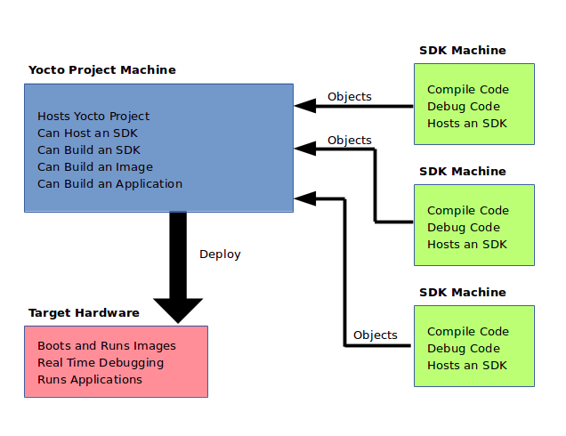
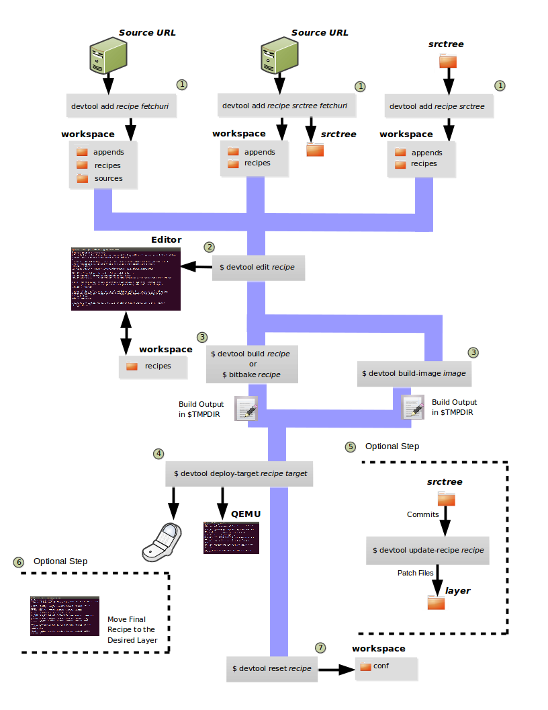
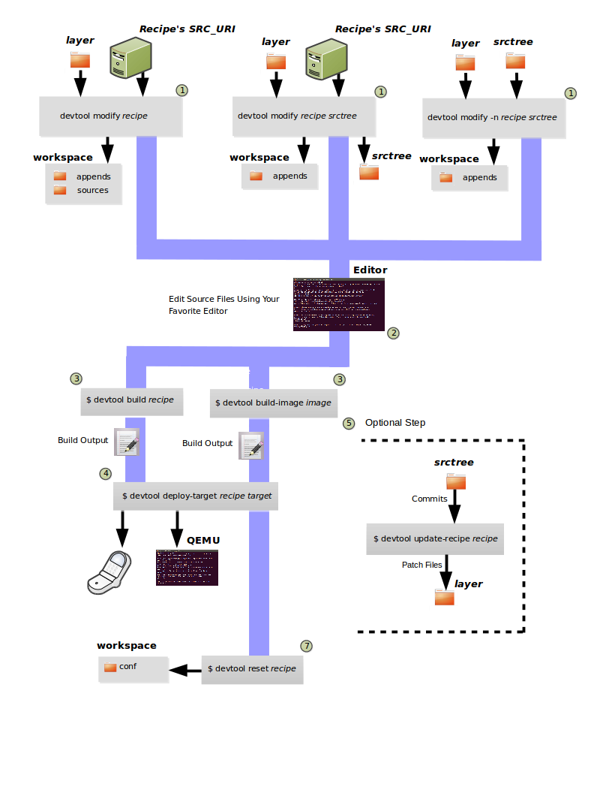
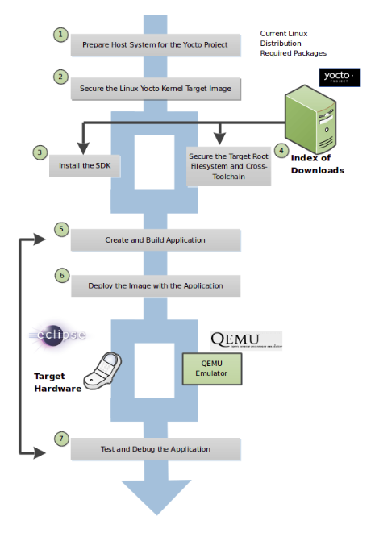
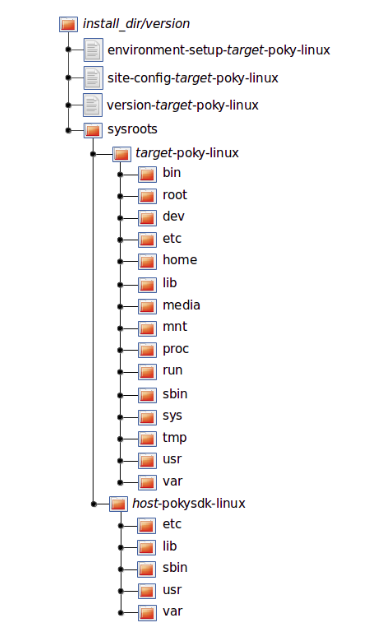
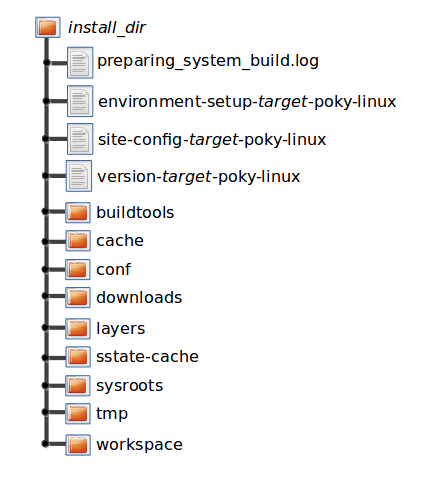

Yocto Project Software Development Kit (SDK) Developer's Guide
Copyright © 2010-2017 Linux Foundation
Permission is granted to copy, distribute and/or modify this document under the terms of the Creative Commons Attribution-Share Alike 2.0 UK: England & Wales as published by Creative Commons.
Manual Notes
For the latest version of the Yocto Project Software Development Kit (SDK) Developer's Guide associated with this Yocto Project release (version 2.3), see the Yocto Project Software Development Kit (SDK) Developer's Guide from the Yocto Project documentation page.
This version of the manual is version 2.3. For later releases of the Yocto Project (if they exist), go to the Yocto Project documentation page and use the drop-down "Active Releases" button and choose the Yocto Project version for which you want the manual.
For an in-development version of the Yocto Project Software Development Kit (SDK) Developer's Guide, see http://www.yoctoproject.org/docs/latest/sdk-manual/sdk-manual.html.
| Revision History | |
|---|---|
| Revision 2.1 | April 2016 |
| Released with the Yocto Project 2.1 Release. | |
| Revision 2.2 | October 2016 |
| Released with the Yocto Project 2.2 Release. | |
| Revision 2.3 | May 2017 |
| Released with the Yocto Project 2.3 Release. | |
Table of Contents
- 1. Introduction
- 2. Using the Extensible SDK
- 2.1. Why use the Extensible SDK and What is in It?
- 2.2. Setting Up to Use the Extensible SDK
- 2.3. Running the Extensible SDK Environment Setup Script
- 2.4. Using
devtoolin Your SDK Workflow - 2.5. A Closer Look at
devtool add - 2.6. Working With Recipes
- 2.7. Restoring the Target Device to its Original State
- 2.8. Installing Additional Items Into the Extensible SDK
- 2.9. Updating the Extensible SDK
- 2.10. Creating a Derivative SDK With Additional Components
- 3. Using the Standard SDK
- 4. Using the SDK Toolchain Directly
- A. Obtaining the SDK
- B. Customizing the Extensible SDK
- B.1. Configuring the Extensible SDK
- B.2. Adjusting the Extensible SDK to Suit Your Build System Setup
- B.3. Changing the Appearance of the Extensible SDK
- B.4. Providing Updates After Installing the Extensible SDK
- B.5. Providing Additional Installable Extensible SDK Content
- B.6. Minimizing the Size of the Extensible SDK Installer Download
- C. Customizing the Standard SDK
- D. Using Eclipse Mars
Chapter 1. Introduction¶
Table of Contents
1.1. Introduction¶
Welcome to the Yocto Project Software Development Kit (SDK) Developer's Guide. This manual provides information that explains how to use both the Yocto Project extensible and standard SDKs to develop applications and images. Additionally, the manual also provides information on how to use the popular Eclipse™ IDE as part of your application development workflow within the SDK environment.
Note
Prior to the 2.0 Release of the Yocto Project, application development was primarily accomplished through the use of the Application Development Toolkit (ADT) and the availability of stand-alone cross-development toolchains and other tools. With the 2.1 Release of the Yocto Project, application development has transitioned to within a tool-rich extensible SDK and the more traditional standard SDK.
All SDKs consist of the following:
Cross-Development Toolchain: This toolchain contains a compiler, debugger, and various miscellaneous tools.
Libraries, Headers, and Symbols: The libraries, headers, and symbols are specific to the image (i.e. they match the image).
Environment Setup Script: This
*.shfile, once run, sets up the cross-development environment by defining variables and preparing for SDK use.
Additionally an extensible SDK has tools that allow you to easily add new applications and libraries to an image, modify the source of an existing component, test changes on the target hardware, and easily integrate an application into the OpenEmbedded build system.
You can use an SDK to independently develop and test code
that is destined to run on some target machine.
SDKs are completely self-contained.
The binaries are linked against their own copy of
libc, which results in no dependencies
on the target system.
To achieve this, the pointer to the dynamic loader is
configured at install time since that path cannot be dynamically
altered.
This is the reason for a wrapper around the
populate_sdk and
populate_sdk_ext archives.
Another feature for the SDKs is that only one set of cross-compiler
toolchain binaries are produced for any given architecture.
This feature takes advantage of the fact that the target hardware can
be passed to gcc as a set of compiler options.
Those options are set up by the environment script and contained in
variables such as
CC
and
LD.
This reduces the space needed for the tools.
Understand, however, that a sysroot is still needed for every target
since those binaries are target-specific.
The SDK development environment consists of the following:
The self-contained SDK, which is an architecture-specific cross-toolchain and matching sysroots (target and native) all built by the OpenEmbedded build system (e.g. the SDK). The toolchain and sysroots are based on a Metadata configuration and extensions, which allows you to cross-develop on the host machine for the target hardware. Additionally, the extensible SDK contains the
devtoolfunctionality.The Quick EMUlator (QEMU), which lets you simulate target hardware. QEMU is not literally part of the SDK. You must build and include this emulator separately. However, QEMU plays an important role in the development process that revolves around use of the SDK.
The Eclipse IDE Yocto Plug-in. This plug-in is available for you if you are an Eclipse user. In the same manner as QEMU, the plug-in is not literally part of the SDK but is rather available for use as part of the development process.
Various performance-related tools that can enhance your development experience. These tools are also separate from the actual SDK but can be independently obtained and used in the development process.
In summary, the extensible and standard SDK share many features. However, the extensible SDK has powerful development tools to help you more quickly develop applications. Following is a table that summarizes the primary differences between the standard and extensible SDK types when considering which to build:
| Feature | Standard SDK | Extensible SDK |
|---|---|---|
| Toolchain | Yes | Yes* |
| Debugger | Yes | Yes* |
| Size | 100+ MBytes | 1+ GBytes (or 300+ MBytes for minimal w/toolchain) |
devtool | No | Yes |
| Build Images | No | Yes |
| Updateable | No | Yes |
| Managed Sysroot** | No | Yes |
| Installed Packages | No*** | Yes**** |
| Construction | Packages | Shared State |
* Extensible SDK will contain the toolchain and debugger if SDK_EXT_TYPE is "full" or SDK_INCLUDE_TOOLCHAIN is "1", which is the default.
** Sysroot is managed through use of devtool. Thus, it is less likely that you will corrupt your SDK sysroot when you try to add additional libraries.
*** Runtime package management can be added to the standard SDK but it is not supported by default.
**** You must build and make the shared state available to extensible SDK users for "packages" you want to enable users to install.
1.1.1. The Cross-Development Toolchain¶
The
Cross-Development Toolchain
consists of a cross-compiler, cross-linker, and cross-debugger
that are used to develop user-space applications for targeted
hardware.
Additionally, for an extensible SDK, the toolchain also has
built-in devtool functionality.
This toolchain is created by running a SDK installer script
or through a
Build Directory
that is based on your Metadata configuration or extension for
your targeted device.
The cross-toolchain works with a matching target sysroot.
1.1.2. Sysroots¶
The native and target sysroots contain needed headers and libraries for generating binaries that run on the target architecture. The target sysroot is based on the target root filesystem image that is built by the OpenEmbedded build system and uses the same Metadata configuration used to build the cross-toolchain.
1.1.3. The QEMU Emulator¶
The QEMU emulator allows you to simulate your hardware while running your application or image. QEMU is not part of the SDK but is made available a number of ways:
If you have cloned the
pokyGit repository to create a Source Directory and you have sourced the environment setup script, QEMU is installed and automatically available.If you have downloaded a Yocto Project release and unpacked it to create a Source Directory and you have sourced the environment setup script, QEMU is installed and automatically available.
If you have installed the cross-toolchain tarball and you have sourced the toolchain's setup environment script, QEMU is also installed and automatically available.
1.1.4. Eclipse Yocto Plug-in¶
The Eclipse IDE is a popular development environment and it fully supports development using the Yocto Project. When you install and configure the Eclipse Yocto Project Plug-in into the Eclipse IDE, you maximize your Yocto Project experience. Installing and configuring the Plug-in results in an environment that has extensions specifically designed to let you more easily develop software. These extensions allow for cross-compilation, deployment, and execution of your output into a QEMU emulation session. You can also perform cross-debugging and profiling. The environment also supports many performance-related tools that enhance your development experience.
Note
Previous releases of the Eclipse Yocto Plug-in supported "user-space tools" (i.e. LatencyTOP, PowerTOP, Perf, SystemTap, and Lttng-ust) that also added to the development experience. These tools have been deprecated beginning with this release of the plug-in.
For information about the application development workflow that uses the Eclipse IDE and for a detailed example of how to install and configure the Eclipse Yocto Project Plug-in, see the "Developing Applications Using Eclipse™" section.
1.1.5. Performance Enhancing Tools¶
Supported performance enhancing tools are available that let you profile, debug, and perform tracing on your projects developed using Eclipse. For information on these tools see http://www.eclipse.org/linuxtools/.
1.2. SDK Development Model¶
Fundamentally, the SDK fits into the development process as follows:
|  |
The SDK is installed on any machine and can be used to develop applications, images, and kernels. An SDK can even be used by a QA Engineer or Release Engineer. The fundamental concept is that the machine that has the SDK installed does not have to be associated with the machine that has the Yocto Project installed. A developer can independently compile and test an object on their machine and then, when the object is ready for integration into an image, they can simply make it available to the machine that has the Yocto Project. Once the object is available, the image can be rebuilt using the Yocto Project to produce the modified image.
You just need to follow these general steps:
Install the SDK for your target hardware: For information on how to install the SDK, see the "Installing the SDK" section.
Download or Build the Target Image: The Yocto Project supports several target architectures and has many pre-built kernel images and root filesystem images.
If you are going to develop your application on hardware, go to the
machinesdownload area and choose a target machine area from which to download the kernel image and root filesystem. This download area could have several files in it that support development using actual hardware. For example, the area might contain.hddimgfiles that combine the kernel image with the filesystem, boot loaders, and so forth. Be sure to get the files you need for your particular development process.If you are going to develop your application and then run and test it using the QEMU emulator, go to the
machines/qemudownload area. From this area, go down into the directory for your target architecture (e.g.qemux86_64for an Intel®-based 64-bit architecture). Download kernel, root filesystem, and any other files you need for your process.Note
To use the root filesystem in QEMU, you need to extract it. See the "Extracting the Root Filesystem" section for information on how to extract the root filesystem.Develop and Test your Application: At this point, you have the tools to develop your application. If you need to separately install and use the QEMU emulator, you can go to QEMU Home Page to download and learn about the emulator. See the "Using the Quick EMUlator (QEMU)" chapter in the Yocto Project Development Manual for information on using QEMU within the Yocto Project.
The remainder of this manual describes how to use both the standard SDK and the extensible SDK. Information also exists in appendix form that describes how you can build, install, and modify an SDK.
Chapter 2. Using the Extensible SDK¶
Table of Contents
- 2.1. Why use the Extensible SDK and What is in It?
- 2.2. Setting Up to Use the Extensible SDK
- 2.3. Running the Extensible SDK Environment Setup Script
- 2.4. Using
devtoolin Your SDK Workflow - 2.5. A Closer Look at
devtool add - 2.6. Working With Recipes
- 2.7. Restoring the Target Device to its Original State
- 2.8. Installing Additional Items Into the Extensible SDK
- 2.9. Updating the Extensible SDK
- 2.10. Creating a Derivative SDK With Additional Components
This chapter describes the extensible SDK and how to install it.
Information covers the pieces of the SDK, how to install it, and
presents a look at using the devtool
functionality.
The extensible SDK makes it easy to add new applications and libraries
to an image, modify the source for an existing component, test
changes on the target hardware, and ease integration into the rest of
the
OpenEmbedded build system.
Note
For a side-by-side comparison of main features supported for an extensible SDK as compared to a standard SDK, see the "Introduction" section.
In addition to the functionality available through
devtool, you can alternatively make use of the
toolchain directly, for example from Makefile, Autotools, and
Eclipse-based projects.
See the
"Using the SDK Toolchain Directly"
chapter for more information.
2.1. Why use the Extensible SDK and What is in It?¶
The extensible SDK provides a cross-development toolchain and
libraries tailored to the contents of a specific image.
You would use the Extensible SDK if you want a toolchain experience
supplemented with the powerful set of devtool
commands tailored for the Yocto Project environment.
The installed extensible SDK consists of several files and
directories.
Basically, it contains an SDK environment setup script, some
configuration files, an internal build system, and the
devtool functionality.
2.2. Setting Up to Use the Extensible SDK¶
The first thing you need to do is install the SDK on your host
development machine by running the *.sh
installation script.
You can download a tarball installer, which includes the
pre-built toolchain, the runqemu
script, the internal build system, devtool,
and support files from the appropriate directory under
http://downloads.yoctoproject.org/releases/yocto/yocto-2.3/toolchain/.
Toolchains are available for 32-bit and 64-bit x86 development
systems from the i686 and
x86_64 directories, respectively.
The toolchains the Yocto Project provides are based off the
core-image-sato image and contain
libraries appropriate for developing against that image.
Each type of development system supports five or more target
architectures.
The names of the tarball installer scripts are such that a string representing the host system appears first in the filename and then is immediately followed by a string representing the target architecture. An extensible SDK has the string "-ext" as part of the name.
poky-glibc-host_system-image_type-arch-toolchain-ext-release_version.sh
Where:
host_system is a string representing your development system:
i686 or x86_64.
image_type is the image for which the SDK was built.
arch is a string representing the tuned target architecture:
i586, x86_64, powerpc, mips, armv7a or armv5te
release_version is a string representing the release number of the
Yocto Project:
2.3, 2.3+snapshot
For example, the following SDK installer is for a 64-bit
development host system and a i586-tuned target architecture
based off the SDK for core-image-sato and
using the current 2.3 snapshot:
poky-glibc-x86_64-core-image-sato-i586-toolchain-ext-2.3.sh
Note
As an alternative to downloading an SDK, you can build the SDK installer. For information on building the installer, see the "Building an SDK Installer" section. Another helpful resource for building an installer is the Cookbook guide to Making an Eclipse Debug Capable Image wiki page. This wiki page focuses on development when using the Eclipse IDE.
The SDK and toolchains are self-contained and by default are
installed into the poky_sdk folder in your
home directory.
You can choose to install the extensible SDK in any location when
you run the installer.
However, the location you choose needs to be writable for whichever
users need to use the SDK, since files will need to be written
under that directory during the normal course of operation.
The following command shows how to run the installer given a
toolchain tarball for a 64-bit x86 development host system and
a 64-bit x86 target architecture.
The example assumes the SDK installer is located in
~/Downloads/.
Note
If you do not have write permissions for the directory into which you are installing the SDK, the installer notifies you and exits. Be sure you have write permissions in the directory and run the installer again.
$ ./poky-glibc-x86_64-core-image-minimal-core2-64-toolchain-ext-2.3.sh
Poky (Yocto Project Reference Distro) Extensible SDK installer version 2.3
===================================================================================
Enter target directory for SDK (default: ~/poky_sdk):
You are about to install the SDK to "/home/scottrif/poky_sdk". Proceed[Y/n]? Y
Extracting SDK......................................................................done
Setting it up...
Extracting buildtools...
Preparing build system...
done
SDK has been successfully set up and is ready to be used.
Each time you wish to use the SDK in a new shell session, you need to source the environment setup script e.g.
$ . /home/scottrif/poky_sdk/environment-setup-core2-64-poky-linux
2.3. Running the Extensible SDK Environment Setup Script¶
Once you have the SDK installed, you must run the SDK environment
setup script before you can actually use it.
This setup script resides in the directory you chose when you
installed the SDK, which is either the default
poky_sdk directory or the directory you
chose during installation.
Before running the script, be sure it is the one that matches the
architecture for which you are developing.
Environment setup scripts begin with the string
"environment-setup" and include as part of
their name the tuned target architecture.
As an example, the following commands set the working directory
to where the SDK was installed and then source the environment
setup script.
In this example, the setup script is for an IA-based
target machine using i586 tuning:
$ cd /home/scottrif/poky_sdk
$ source environment-setup-core2-64-poky-linux
SDK environment now set up; additionally you may now run devtool to perform development tasks.
Run devtool --help for further details.
When you run the setup script, many environment variables are defined:
SDKTARGETSYSROOT - The path to the sysroot used for cross-compilation
PKG_CONFIG_PATH - The path to the target pkg-config files
CONFIG_SITE - A GNU autoconf site file preconfigured for the target
CC - The minimal command and arguments to run the C compiler
CXX - The minimal command and arguments to run the C++ compiler
CPP - The minimal command and arguments to run the C preprocessor
AS - The minimal command and arguments to run the assembler
LD - The minimal command and arguments to run the linker
GDB - The minimal command and arguments to run the GNU Debugger
STRIP - The minimal command and arguments to run 'strip', which strips symbols
RANLIB - The minimal command and arguments to run 'ranlib'
OBJCOPY - The minimal command and arguments to run 'objcopy'
OBJDUMP - The minimal command and arguments to run 'objdump'
AR - The minimal command and arguments to run 'ar'
NM - The minimal command and arguments to run 'nm'
TARGET_PREFIX - The toolchain binary prefix for the target tools
CROSS_COMPILE - The toolchain binary prefix for the target tools
CONFIGURE_FLAGS - The minimal arguments for GNU configure
CFLAGS - Suggested C flags
CXXFLAGS - Suggested C++ flags
LDFLAGS - Suggested linker flags when you use CC to link
CPPFLAGS - Suggested preprocessor flags
2.4. Using devtool in Your SDK Workflow¶
The cornerstone of the extensible SDK is a command-line tool
called devtool.
This tool provides a number of features that help
you build, test and package software within the extensible SDK, and
optionally integrate it into an image built by the OpenEmbedded
build system.
The devtool command line is organized
similarly to
Git in that it has a
number of sub-commands for each function.
You can run devtool --help to see all the
commands.
Three devtool subcommands that provide
entry-points into development are:
devtool add: Assists in adding new software to be built.devtool modify: Sets up an environment to enable you to modify the source of an existing component.devtool upgrade: Updates an existing recipe so that you can build it for an updated set of source files.
As with the OpenEmbedded build system, "recipes" represent software
packages within devtool.
When you use devtool add, a recipe is
automatically created.
When you use devtool modify, the specified
existing recipe is used in order to determine where to get the source
code and how to patch it.
In both cases, an environment is set up so that when you build the
recipe a source tree that is under your control is used in order to
allow you to make changes to the source as desired.
By default, both new recipes and the source go into a "workspace"
directory under the SDK.
The remainder of this section presents the
devtool add,
devtool modify, and
devtool upgrade workflows.
2.4.1. Use devtool add to Add an Application¶
The devtool add command generates
a new recipe based on existing source code.
This command takes advantage of the
workspace
layer that many devtool commands
use.
The command is flexible enough to allow you to extract source
code into both the workspace or a separate local Git repository
and to use existing code that does not need to be extracted.
Depending on your particular scenario, the arguments and options
you use with devtool add form different
combinations.
The following diagram shows common development flows
you would use with the devtool add
command:

Generating the New Recipe: The top part of the flow shows three scenarios by which you could use
devtool addto generate a recipe based on existing source code.In a shared development environment, it is typical where other developers are responsible for various areas of source code. As a developer, you are probably interested in using that source code as part of your development using the Yocto Project. All you need is access to the code, a recipe, and a controlled area in which to do your work.
Within the diagram, three possible scenarios feed into the
devtool addworkflow:Left: The left scenario represents a common situation where the source code does not exist locally and needs to be extracted. In this situation, you just let it get extracted to the default workspace - you do not want it in some specific location outside of the workspace. Thus, everything you need will be located in the workspace:
$ devtool addrecipe fetchuriWith this command,
devtoolcreates a recipe and an append file in the workspace as well as extracts the upstream source files into a local Git repository also within thesourcesfolder.Middle: The middle scenario also represents a situation where the source code does not exist locally. In this case, the code is again upstream and needs to be extracted to some local area - this time outside of the default workspace. If required,
devtoolalways creates a Git repository locally during the extraction. Furthermore, the first positional argumentsrctreein this case identifies where thedevtool addcommand will locate the extracted code outside of the workspace:$ devtool addrecipe srctree fetchuriIn summary, the source code is pulled from
fetchuriand extracted into the location defined bysrctreeas a local Git repository.Within workspace,
devtoolcreates both the recipe and an append file for the recipe.Right: The right scenario represents a situation where the source tree (srctree) has been previously prepared outside of the
devtoolworkspace.The following command names the recipe and identifies where the existing source tree is located:
$ devtool addrecipe srctreeThe command examines the source code and creates a recipe for it placing the recipe into the workspace.
Because the extracted source code already exists,
devtooldoes not try to relocate it into the workspace - just the new the recipe is placed in the workspace.Aside from a recipe folder, the command also creates an append folder and places an initial
*.bbappendwithin.
Edit the Recipe: At this point, you can use
devtool edit-recipeto open up the editor as defined by the$EDITORenvironment variable and modify the file:$ devtool edit-reciperecipeFrom within the editor, you can make modifications to the recipe that take affect when you build it later.
Build the Recipe or Rebuild the Image: At this point in the flow, the next step you take depends on what you are going to do with the new code.
If you need to take the build output and eventually move it to the target hardware, you would use
devtool build:$ devtool buildrecipeOn the other hand, if you want an image to contain the recipe's packages for immediate deployment onto a device (e.g. for testing purposes), you can use the
devtool build-imagecommand:$ devtool build-imageimageDeploy the Build Output: When you use the
devtool buildcommand to build out your recipe, you probably want to see if the resulting build output works as expected on target hardware.Note
This step assumes you have a previously built image that is already either running in QEMU or running on actual hardware. Also, it is assumed that for deployment of the image to the target, SSH is installed in the image and if the image is running on real hardware that you have network access to and from your development machine.You can deploy your build output to that target hardware by using the
devtool deploy-targetcommand:$ devtool deploy-targetrecipe targetThe
targetis a live target machine running as an SSH server.You can, of course, also deploy the image you build using the
devtool build-imagecommand to actual hardware. However,devtooldoes not provide a specific command that allows you to do this.Finish Your Work With the Recipe: The
devtool finishcommand creates any patches corresponding to commits in the local Git repository, moves the new recipe to a more permanent layer, and then resets the recipe so that the recipe is built normally rather than from the workspace.$ devtool finishrecipe layerNote
Any changes you want to turn into patches must be committed to the Git repository in the source tree.As mentioned, the
devtool finishcommand moves the final recipe to its permanent layer.As a final process of the
devtool finishcommand, the state of the standard layers and the upstream source is restored so that you can build the recipe from those areas rather than the workspace.Note
You can use thedevtool resetcommand to put things back should you decide you do not want to proceed with your work. If you do use this command, realize that the source tree is preserved.
2.4.2. Use devtool modify to Modify the Source of an Existing Component¶
The devtool modify command prepares the
way to work on existing code that already has a recipe in
place.
The command is flexible enough to allow you to extract code,
specify the existing recipe, and keep track of and gather any
patch files from other developers that are
associated with the code.
Depending on your particular scenario, the arguments and options
you use with devtool modify form different
combinations.
The following diagram shows common development flows
you would use with the devtool modify
command:

Preparing to Modify the Code: The top part of the flow shows three scenarios by which you could use
devtool modifyto prepare to work on source files. Each scenario assumes the following:The recipe exists in some layer external to the
devtoolworkspace.The source files exist upstream in an un-extracted state or locally in a previously extracted state.
The typical situation is where another developer has created some layer for use with the Yocto Project and their recipe already resides in that layer. Furthermore, their source code is readily available either upstream or locally.
Left: The left scenario represents a common situation where the source code does not exist locally and needs to be extracted. In this situation, the source is extracted into the default workspace location. The recipe, in this scenario, is in its own layer outside the workspace (i.e.
meta-layername).The following command identifies the recipe and by default extracts the source files:
$ devtool modifyrecipeOnce
devtoollocates the recipe, it uses theSRC_URIvariable to locate the source code and any local patch files from other developers are located.Note
You cannot provide an URL forsrctreewhen using thedevtool modifycommand.With this scenario, however, since no
srctreeargument exists, thedevtool modifycommand by default extracts the source files to a Git structure. Furthermore, the location for the extracted source is the default area within the workspace. The result is that the command sets up both the source code and an append file within the workspace with the recipe remaining in its original location.Middle: The middle scenario represents a situation where the source code also does not exist locally. In this case, the code is again upstream and needs to be extracted to some local area as a Git repository. The recipe, in this scenario, is again in its own layer outside the workspace.
The following command tells
devtoolwhat recipe with which to work and, in this case, identifies a local area for the extracted source files that is outside of the default workspace:$ devtool modifyrecipe srctreeAs with all extractions, the command uses the recipe's
SRC_URIto locate the source files. Once the files are located, the command by default extracts them. Providing thesrctreeargument instructsdevtoolwhere place the extracted source.Within workspace,
devtoolcreates an append file for the recipe. The recipe remains in its original location but the source files are extracted to the location you provided withsrctree.Right: The right scenario represents a situation where the source tree (
srctree) exists as a previously extracted Git structure outside of thedevtoolworkspace. In this example, the recipe also exists elsewhere in its own layer.The following command tells
devtoolthe recipe with which to work, uses the "-n" option to indicate source does not need to be extracted, and usessrctreeto point to the previously extracted source files:$ devtool modify -nrecipe srctreeOnce the command finishes, it creates only an append file for the recipe in the workspace. The recipe and the source code remain in their original locations.
Edit the Source: Once you have used the
devtool modifycommand, you are free to make changes to the source files. You can use any editor you like to make and save your source code modifications.Build the Recipe: Once you have updated the source files, you can build the recipe.
Deploy the Build Output: When you use the
devtool buildcommand to build out your recipe, you probably want to see if the resulting build output works as expected on target hardware.Note
This step assumes you have a previously built image that is already either running in QEMU or running on actual hardware. Also, it is assumed that for deployment of the image to the target, SSH is installed in the image and if the image is running on real hardware that you have network access to and from your development machine.You can deploy your build output to that target hardware by using the
devtool deploy-targetcommand:$ devtool deploy-targetrecipe targetThe
targetis a live target machine running as an SSH server.You can, of course, also deploy the image you build using the
devtool build-imagecommand to actual hardware. However,devtooldoes not provide a specific command that allows you to do this.Finish Your Work With the Recipe: The
devtool finishcommand creates any patches corresponding to commits in the local Git repository, updates the recipe to point to them (or creates a.bbappendfile to do so, depending on the specified destination layer), and then resets the recipe so that the recipe is built normally rather than from the workspace.$ devtool finishrecipe layerNote
Any changes you want to turn into patches must be committed to the Git repository in the source tree.Because there is no need to move the recipe,
devtool finisheither updates the original recipe in the original layer or the command creates a.bbappendin a different layer as provided bylayer.As a final process of the
devtool finishcommand, the state of the standard layers and the upstream source is restored so that you can build the recipe from those areas rather than the workspace.Note
You can use thedevtool resetcommand to put things back should you decide you do not want to proceed with your work. If you do use this command, realize that the source tree is preserved.
2.4.3. Use devtool upgrade to Create a Version of the Recipe that Supports a Newer Version of the Software¶
The devtool upgrade command updates
an existing recipe so that you can build it for an updated
set of source files.
The command is flexible enough to allow you to specify
source code revision and versioning schemes, extract code into
or out of the devtool workspace, and
work with any source file forms that the fetchers support.
Depending on your particular scenario, the arguments and options
you use with devtool upgrade form different
combinations.
The following diagram shows a common development flow
you would use with the devtool modify
command:

Initiate the Upgrade: The top part of the flow shows a typical scenario by which you could use
devtool upgrade. The following conditions exist:The recipe exists in some layer external to the
devtoolworkspace.The source files for the new release exist adjacent to the same location pointed to by
SRC_URIin the recipe (e.g. a tarball with the new version number in the name, or as a different revision in the upstream Git repository).
A common situation is where third-party software has undergone a revision so that it has been upgraded. The recipe you have access to is likely in your own layer. Thus, you need to upgrade the recipe to use the newer version of the software:
$ devtool upgrade -Vversion recipeBy default, the
devtool upgradecommand extracts source code into thesourcesdirectory in the workspace. If you want the code extracted to any other location, you need to provide thesrctreepositional argument with the command as follows:$ devtool upgrade -Vversion recipe srctreeAlso, in this example, the "-V" option is used to specify the new version. If the source files pointed to by the
SRC_URIstatement in the recipe are in a Git repository, you must provide the "-S" option and specify a revision for the software.Once
devtoollocates the recipe, it uses theSRC_URIvariable to locate the source code and any local patch files from other developers are located. The result is that the command sets up the source code, the new version of the recipe, and an append file all within the workspace.Resolve any Conflicts created by the Upgrade: At this point, there could be some conflicts due to the software being upgraded to a new version. This would occur if your recipe specifies some patch files in
SRC_URIthat conflict with changes made in the new version of the software. If this is the case, you need to resolve the conflicts by editing the source and following the normalgit rebaseconflict resolution process.Before moving onto the next step, be sure to resolve any such conflicts created through use of a newer or different version of the software.
Build the Recipe: Once you have your recipe in order, you can build it. You can either use
devtool buildorbitbake. Either method produces build output that is stored inTMPDIR.Deploy the Build Output: When you use the
devtool buildcommand orbitbaketo build out your recipe, you probably want to see if the resulting build output works as expected on target hardware.Note
This step assumes you have a previously built image that is already either running in QEMU or running on actual hardware. Also, it is assumed that for deployment of the image to the target, SSH is installed in the image and if the image is running on real hardware that you have network access to and from your development machine.You can deploy your build output to that target hardware by using the
devtool deploy-targetcommand:$ devtool deploy-targetrecipe targetThe
targetis a live target machine running as an SSH server.You can, of course, also deploy the image you build using the
devtool build-imagecommand to actual hardware. However,devtooldoes not provide a specific command that allows you to do this.Finish Your Work With the Recipe: The
devtool finishcommand creates any patches corresponding to commits in the local Git repository, moves the new recipe to a more permanent layer, and then resets the recipe so that the recipe is built normally rather than from the workspace. If you specify a destination layer that is the same as the original source, then the old version of the recipe and associated files will be removed prior to adding the new version.$ devtool finishrecipe layerNote
Any changes you want to turn into patches must be committed to the Git repository in the source tree.As a final process of the
devtool finishcommand, the state of the standard layers and the upstream source is restored so that you can build the recipe from those areas rather than the workspace.Note
You can use thedevtool resetcommand to put things back should you decide you do not want to proceed with your work. If you do use this command, realize that the source tree is preserved.
2.5. A Closer Look at devtool add¶
The devtool add command automatically creates a
recipe based on the source tree with which you provide it.
Currently, the command has support for the following:
Autotools (
autoconfandautomake)CMake
Scons
qmakePlain
MakefileOut-of-tree kernel module
Binary package (i.e. "-b" option)
Node.js module
Python modules that use
setuptoolsordistutils
Apart from binary packages, the determination of how a source tree
should be treated is automatic based on the files present within
that source tree.
For example, if a CMakeLists.txt file is found,
then the source tree is assumed to be using
CMake and is treated accordingly.
Note
In most cases, you need to edit the automatically generated recipe in order to make it build properly. Typically, you would go through several edit and build cycles until you can build the recipe. Once the recipe can be built, you could use possible further iterations to test the recipe on the target device.
The remainder of this section covers specifics regarding how parts of the recipe are generated.
2.5.1. Name and Version¶
If you do not specify a name and version on the command
line, devtool add attempts to determine
the name and version of the software being built from
various metadata within the source tree.
Furthermore, the command sets the name of the created recipe
file accordingly.
If the name or version cannot be determined, the
devtool add command prints an error and
you must re-run the command with both the name and version
or just the name or version specified.
Sometimes the name or version determined from the source tree might be incorrect. For such a case, you must reset the recipe:
$ devtool reset -n recipename
After running the devtool reset command,
you need to run devtool add again and
provide the name or the version.
2.5.2. Dependency Detection and Mapping¶
The devtool add command attempts to
detect build-time dependencies and map them to other recipes
in the system.
During this mapping, the command fills in the names of those
recipes in the
DEPENDS
value within the recipe.
If a dependency cannot be mapped, then a comment is placed in
the recipe indicating such.
The inability to map a dependency might be caused because the
naming is not recognized or because the dependency simply is
not available.
For cases where the dependency is not available, you must use
the devtool add command to add an
additional recipe to satisfy the dependency and then come
back to the first recipe and add its name to
DEPENDS.
If you need to add runtime dependencies, you can do so by adding the following to your recipe:
RDEPENDS_${PN} += "dependency1 dependency2 ..."
Note
Thedevtool add command often cannot
distinguish between mandatory and optional dependencies.
Consequently, some of the detected dependencies might
in fact be optional.
When in doubt, consult the documentation or the configure
script for the software the recipe is building for further
details.
In some cases, you might find you can substitute the
dependency for an option to disable the associated
functionality passed to the configure script.
2.5.3. License Detection¶
The devtool add command attempts to
determine if the software you are adding is able to be
distributed under a common open-source license and sets the
LICENSE
value accordingly.
You should double-check this value against the documentation
or source files for the software you are building and update
that LICENSE value if necessary.
The devtool add command also sets the
LIC_FILES_CHKSUM
value to point to all files that appear to be license-related.
However, license statements often appear in comments at the top
of source files or within documentation.
Consequently, you might need to amend the
LIC_FILES_CHKSUM variable to point to one
or more of those comments if present.
Setting LIC_FILES_CHKSUM is particularly
important for third-party software.
The mechanism attempts to ensure correct licensing should you
upgrade the recipe to a newer upstream version in future.
Any change in licensing is detected and you receive an error
prompting you to check the license text again.
If the devtool add command cannot
determine licensing information, the
LICENSE value is set to "CLOSED" and the
LIC_FILES_CHKSUM value remains unset.
This behavior allows you to continue with development but is
unlikely to be correct in all cases.
Consequently, you should check the documentation or source
files for the software you are building to determine the actual
license.
2.5.4. Adding Makefile-Only Software¶
The use of make by itself is very common
in both proprietary and open source software.
Unfortunately, Makefiles are often not written with
cross-compilation in mind.
Thus, devtool add often cannot do very
much to ensure that these Makefiles build correctly.
It is very common, for example, to explicitly call
gcc instead of using the
CC
variable.
Usually, in a cross-compilation environment,
gcc is the compiler for the build host
and the cross-compiler is named something similar to
arm-poky-linux-gnueabi-gcc and might
require some arguments (e.g. to point to the associated sysroot
for the target machine).
When writing a recipe for Makefile-only software, keep the following in mind:
You probably need to patch the Makefile to use variables instead of hardcoding tools within the toolchain such as
gccandg++.The environment in which
makeruns is set up with various standard variables for compilation (e.g.CC,CXX, and so forth) in a similar manner to the environment set up by the SDK's environment setup script. One easy way to see these variables is to run thedevtool buildcommand on the recipe and then look inoe-logs/run.do_compile. Towards the top of this file you will see a list of environment variables that are being set. You can take advantage of these variables within the Makefile.If the Makefile sets a default for a variable using "=", that default overrides the value set in the environment, which is usually not desirable. In this situation, you can either patch the Makefile so it sets the default using the "?=" operator, or you can alternatively force the value on the
makecommand line. To force the value on the command line, add the variable setting toEXTRA_OEMAKEorPACKAGECONFIG_CONFARGSwithin the recipe. Here is an example usingEXTRA_OEMAKE:EXTRA_OEMAKE += "'CC=${CC}' 'CXX=${CXX}'"In the above example, single quotes are used around the variable settings as the values are likely to contain spaces because required default options are passed to the compiler.
Hardcoding paths inside Makefiles is often problematic in a cross-compilation environment. This is particularly true because those hardcoded paths often point to locations on the build host and thus will either be read-only or will introduce contamination into the cross-compilation by virtue of being specific to the build host rather than the target. Patching the Makefile to use prefix variables or other path variables is usually the way to handle this.
Sometimes a Makefile runs target-specific commands such as
ldconfig. For such cases, you might be able to simply apply patches that remove these commands from the Makefile.
2.5.5. Adding Native Tools¶
Often, you need to build additional tools that run on the
build host system as opposed to the target.
You should indicate this using one of the following methods
when you run devtool add:
Specify the name of the recipe such that it ends with "-native". Specifying the name like this produces a recipe that only builds for the build host.
Specify the "‐‐also-native" option with the
devtool addcommand. Specifying this option creates a recipe file that still builds for the target but also creates a variant with a "-native" suffix that builds for the build host.
Note
If you need to add a tool that is shipped as part of a source tree that builds code for the target, you can typically accomplish this by building the native and target parts separately rather than within the same compilation process. Realize though that with the "‐‐also-native" option, you can add the tool using just one recipe file.
2.5.6. Adding Node.js Modules¶
You can use the devtool add command two
different ways to add Node.js modules: 1) Through
npm and, 2) from a repository or local
source.
Use the following form to add Node.js modules through
npm:
$ devtool add "npm://registry.npmjs.org;name=forever;version=0.15.1"
The name and version parameters are mandatory. Lockdown and shrinkwrap files are generated and pointed to by the recipe in order to freeze the version that is fetched for the dependencies according to the first time. This also saves checksums that are verified on future fetches. Together, these behaviors ensure the reproducibility and integrity of the build.
Notes
You must use quotes around the URL. The
devtool adddoes not require the quotes, but the shell considers ";" as a splitter between multiple commands. Thus, without the quotes,devtool adddoes not receive the other parts, which results in several "command not found" errors.In order to support adding Node.js modules, a
nodejsrecipe must be part of your SDK in order to provide Node.js itself.
As mentioned earlier, you can also add Node.js modules
directly from a repository or local source tree.
To add modules this way, use devtool add in
the following form:
$ devtool add https://github.com/diversario/node-ssdp
In this example, devtool fetches the specified
Git repository, detects that the code is Node.js code, fetches
dependencies using npm, and sets
SRC_URI
accordingly.
2.6. Working With Recipes¶
When building a recipe with devtool build the
typical build progression is as follows:
Fetch the source
Unpack the source
Configure the source
Compiling the source
Install the build output
Package the installed output
For recipes in the workspace, fetching and unpacking is disabled as the source tree has already been prepared and is persistent. Each of these build steps is defined as a function, usually with a "do_" prefix. These functions are typically shell scripts but can instead be written in Python.
If you look at the contents of a recipe, you will see that the
recipe does not include complete instructions for building the
software.
Instead, common functionality is encapsulated in classes inherited
with the inherit directive, leaving the recipe
to describe just the things that are specific to the software to be
built.
A base
class exists that is implicitly inherited by all recipes and provides
the functionality that most typical recipes need.
The remainder of this section presents information useful when working with recipes.
2.6.1. Finding Logs and Work Files¶
When you are debugging a recipe that you previously created using
devtool add or whose source you are modifying
by using the devtool modify command, after
the first run of devtool build, you will
find some symbolic links created within the source tree:
oe-logs, which points to the directory in
which log files and run scripts for each build step are created
and oe-workdir, which points to the temporary
work area for the recipe.
You can use these links to get more information on what is
happening at each build step.
These locations under oe-workdir are
particularly useful:
image/: Contains all of the files installed at thedo_installstage. Within a recipe, this directory is referred to by the expression${D}.sysroot-destdir/: Contains a subset of files installed withindo_installthat have been put into the shared sysroot. For more information, see the "Sharing Files Between Recipes" section.packages-split/: Contains subdirectories for each package produced by the recipe. For more information, see the "Packaging" section.
2.6.2. Setting Configure Arguments¶
If the software your recipe is building uses GNU autoconf,
then a fixed set of arguments is passed to it to enable
cross-compilation plus any extras specified by
EXTRA_OECONF
or
PACKAGECONFIG_CONFARGS
set within the recipe.
If you wish to pass additional options, add them to
EXTRA_OECONF or
PACKAGECONFIG_CONFARGS.
Other supported build tools have similar variables
(e.g.
EXTRA_OECMAKE
for CMake,
EXTRA_OESCONS
for Scons, and so forth).
If you need to pass anything on the make
command line, you can use EXTRA_OEMAKE or the
PACKAGECONFIG_CONFARGS
variables to do so.
You can use the devtool configure-help command
to help you set the arguments listed in the previous paragraph.
The command determines the exact options being passed, and shows
them to you along with any custom arguments specified through
EXTRA_OECONF or
PACKAGECONFIG_CONFARGS.
If applicable, the command also shows you the output of the
configure script's "‐‐help" option as a reference.
2.6.3. Sharing Files Between Recipes¶
Recipes often need to use files provided by other recipes on the build host. For example, an application linking to a common library needs access to the library itself and its associated headers. The way this access is accomplished within the extensible SDK is through the sysroot. One sysroot exists per "machine" for which the SDK is being built. In practical terms, this means a sysroot exists for the target machine, and a sysroot exists for the build host.
Recipes should never write files directly into the sysroot.
Instead, files should be installed into standard locations
during the
do_install
task within the
${D}
directory.
A subset of these files automatically go into the sysroot.
The reason for this limitation is that almost all files that go
into the sysroot are cataloged in manifests in order to ensure
they can be removed later when a recipe is modified or removed.
Thus, the sysroot is able to remain free from stale files.
2.6.4. Packaging¶
Packaging is not always particularly relevant within the extensible SDK. However, if you examine how build output gets into the final image on the target device, it is important to understand packaging because the contents of the image are expressed in terms of packages and not recipes.
During the
do_package
task, files installed during the
do_install
task are split into one main package, which is almost always named
the same as the recipe, and several other packages.
This separation is done because not all of those installed files
are always useful in every image.
For example, you probably do not need any of the documentation
installed in a production image.
Consequently, for each recipe the documentation files are separated
into a -doc package.
Recipes that package software that has optional modules or
plugins might do additional package splitting as well.
After building a recipe you can see where files have gone by
looking in the oe-workdir/packages-split
directory, which contains a subdirectory for each package.
Apart from some advanced cases, the
PACKAGES
and
FILES
variables controls splitting.
The PACKAGES variable lists all of the
packages to be produced, while the FILES
variable specifies which files to include in each package,
using an override to specify the package.
For example, FILES_${PN} specifies the files
to go into the main package (i.e. the main package is named the
same as the recipe and
${PN}
evaluates to the recipe name).
The order of the PACKAGES value is significant.
For each installed file, the first package whose
FILES value matches the file is the package
into which the file goes.
Defaults exist for both the PACKAGES and
FILES variables.
Consequently, you might find you do not even need to set these
variables in your recipe unless the software the recipe is
building installs files into non-standard locations.
2.7. Restoring the Target Device to its Original State¶
If you use the devtool deploy-target
command to write a recipe's build output to the target, and
you are working on an existing component of the system, then you
might find yourself in a situation where you need to restore the
original files that existed prior to running the
devtool deploy-target command.
Because the devtool deploy-target command
backs up any files it overwrites, you can use the
devtool undeploy-target to restore those files
and remove any other files the recipe deployed.
Consider the following example:
$ devtool undeploy-target lighttpd root@192.168.7.2
If you have deployed multiple applications, you can remove them all at once thus restoring the target device back to its original state:
$ devtool undeploy-target -a root@192.168.7.2
Information about files deployed to the target as well as any backed up files are stored on the target itself. This storage of course requires some additional space on the target machine.
Note
Thedevtool deploy-target and
devtool undeploy-target command do not
currently interact with any package management system on the
target device (e.g. RPM or OPKG).
Consequently, you should not intermingle operations
devtool deploy-target and the package
manager operations on the target device.
Doing so could result in a conflicting set of files.
2.8. Installing Additional Items Into the Extensible SDK¶
The extensible SDK typically only comes with a small number of tools
and libraries out of the box.
If you have a minimal SDK, then it starts mostly empty and is
populated on-demand.
However, sometimes you will need to explicitly install extra items
into the SDK.
If you need these extra items, you can first search for the items
using the devtool search command.
For example, suppose you need to link to libGL but you are not sure
which recipe provides it.
You can use the following command to find out:
$ devtool search libGL
mesa A free implementation of the OpenGL API
Once you know the recipe (i.e. mesa in this
example), you can install it:
$ devtool sdk-install mesa
By default, the devtool sdk-install assumes the
item is available in pre-built form from your SDK provider.
If the item is not available and it is acceptable to build the item
from source, you can add the "-s" option as follows:
$ devtool sdk-install -s mesa
It is important to remember that building the item from source takes
significantly longer than installing the pre-built artifact.
Also, if no recipe exists for the item you want to add to the SDK, you
must instead add it using the devtool add command.
2.9. Updating the Extensible SDK¶
If you are working with an extensible SDK that gets occasionally updated (e.g. typically when that SDK has been provided to you by another party), then you will need to manually pull down those updates to your installed SDK.
To update your installed SDK, run the following:
$ devtool sdk-update
The previous command assumes your SDK provider has set the default update URL for you. If that URL has not been set, you need to specify it yourself as follows:
$ devtool sdk-update path_to_update_directory
Note
The URL needs to point specifically to a published SDK and not an SDK installer that you would download and install.
2.10. Creating a Derivative SDK With Additional Components¶
You might need to produce an SDK that contains your own custom libraries for sending to a third party (e.g., if you are a vendor with customers needing to build their own software for the target platform). If that is the case, then you can produce a derivative SDK based on the currently installed SDK fairly easily. Use these steps:
If necessary, install an extensible SDK that you want to use as a base for your derivative SDK.
Source the environment script for the SDK.
Add the extra libraries or other components you want by using the
devtool addcommand.Run the
devtool build-sdkcommand.
The above procedure takes the recipes added to the workspace and constructs a new SDK installer containing those recipes and the resulting binary artifacts. The recipes go into their own separate layer in the constructed derivative SDK, leaving the workspace clean and ready for users to add their own recipes.
Chapter 3. Using the Standard SDK¶
Table of Contents
This chapter describes the standard SDK and how to install it. Information includes unique installation and setup aspects for the standard SDK.
Note
For a side-by-side comparison of main features supported for a standard SDK as compared to an extensible SDK, see the "Introduction" section.
You can use a standard SDK to work on Makefile, Autotools, and Eclipse-based projects. See the "Working with Different Types of Projects" chapter for more information.
3.1. Why use the Standard SDK and What is in It?¶
The Standard SDK provides a cross-development toolchain and
libraries tailored to the contents of a specific image.
You would use the Standard SDK if you want a more traditional
toolchain experience as compared to the extensible SDK, which
provides an internal build system and the
devtool functionality.
The installed Standard SDK consists of several files and directories. Basically, it contains an SDK environment setup script, some configuration files, and host and target root filesystems to support usage. You can see the directory structure in the "Installed Standard SDK Directory Structure" section.
3.2. Installing the SDK¶
The first thing you need to do is install the SDK on your host
development machine by running the *.sh
installation script.
You can download a tarball installer, which includes the
pre-built toolchain, the runqemu
script, and support files from the appropriate directory under
http://downloads.yoctoproject.org/releases/yocto/yocto-2.3/toolchain/.
Toolchains are available for 32-bit and 64-bit x86 development
systems from the i686 and
x86_64 directories, respectively.
The toolchains the Yocto Project provides are based off the
core-image-sato image and contain
libraries appropriate for developing against that image.
Each type of development system supports five or more target
architectures.
The names of the tarball installer scripts are such that a string representing the host system appears first in the filename and then is immediately followed by a string representing the target architecture.
poky-glibc-host_system-image_type-arch-toolchain-release_version.sh
Where:
host_system is a string representing your development system:
i686 or x86_64.
image_type is the image for which the SDK was built.
arch is a string representing the tuned target architecture:
i586, x86_64, powerpc, mips, armv7a or armv5te
release_version is a string representing the release number of the
Yocto Project:
2.3, 2.3+snapshot
For example, the following SDK installer is for a 64-bit
development host system and a i586-tuned target architecture
based off the SDK for core-image-sato and
using the current 2.3 snapshot:
poky-glibc-x86_64-core-image-sato-i586-toolchain-2.3.sh
Note
As an alternative to downloading an SDK, you can build the SDK installer. For information on building the installer, see the "Building an SDK Installer" section. Another helpful resource for building an installer is the Cookbook guide to Making an Eclipse Debug Capable Image wiki page. This wiki page focuses on development when using the Eclipse IDE.
The SDK and toolchains are self-contained and by default are
installed into /opt/poky.
However, when you run the SDK installer, you can choose an
installation directory.
Note
You must change the permissions on the SDK installer script so that it is executable:
$ chmod +x poky-glibc-x86_64-core-image-sato-i586-toolchain-2.3.sh
The following command shows how to run the installer given a
toolchain tarball for a 64-bit x86 development host system and
a 32-bit x86 target architecture.
The example assumes the SDK installer is located in
~/Downloads/.
Note
If you do not have write permissions for the directory into which you are installing the SDK, the installer notifies you and exits. Be sure you have write permissions in the directory and run the installer again.
$ ./poky-glibc-x86_64-core-image-sato-i586-toolchain-2.3.sh
Poky (Yocto Project Reference Distro) SDK installer version 2.3
===============================================================
Enter target directory for SDK (default: /opt/poky/2.3):
You are about to install the SDK to "/opt/poky/2.3". Proceed[Y/n]? Y
Extracting SDK.......................................................................done
Setting it up...done
SDK has been successfully set up and is ready to be used.
Each time you wish to use the SDK in a new shell session, you need to source the environment setup script e.g.
$ . /opt/poky/2.3/environment-setup-i586-poky-linux
Again, reference the "Installed Standard SDK Directory Structure" section for more details on the resulting directory structure of the installed SDK.
3.3. Running the SDK Environment Setup Script¶
Once you have the SDK installed, you must run the SDK environment setup script before you can actually use it. This setup script resides in the directory you chose when you installed the SDK. For information on where this setup script can reside, see the "Obtaining the SDK" Appendix.
Before running the script, be sure it is the one that matches the
architecture for which you are developing.
Environment setup scripts begin with the string
"environment-setup" and include as part of
their name the tuned target architecture.
For example, the command to source a setup script for an IA-based
target machine using i586 tuning and located in the default SDK
installation directory is as follows:
$ source /opt/poky/2.3/environment-setup-i586-poky-linux
When you run the setup script, the same environment variables are defined as are when you run the setup script for an extensible SDK. See the "Running the Extensible SDK Environment Setup Script" section for more information.
Chapter 4. Using the SDK Toolchain Directly¶
Table of Contents
You can use the SDK toolchain directly with Makefile, Autotools, and Eclipse™ based projects. This chapter covers information specific to each of these types of projects.
4.1. Autotools-Based Projects¶
Once you have a suitable cross-toolchain installed, it is very easy to develop a project outside of the OpenEmbedded build system. This section presents a simple "Helloworld" example that shows how to set up, compile, and run the project.
4.1.1. Creating and Running a Project Based on GNU Autotools¶
Follow these steps to create a simple Autotools-based project:
Create your directory: Create a clean directory for your project and then make that directory your working location:
$ mkdir $HOME/helloworld $ cd $HOME/helloworldPopulate the directory: Create
hello.c,Makefile.am, andconfigure.acfiles as follows:For
hello.c, include these lines:#include <stdio.h> main() { printf("Hello World!\n"); }For
Makefile.am, include these lines:bin_PROGRAMS = hello hello_SOURCES = hello.cFor
configure.in, include these lines:AC_INIT(hello,0.1) AM_INIT_AUTOMAKE([foreign]) AC_PROG_CC AC_PROG_INSTALL AC_OUTPUT(Makefile)
Source the cross-toolchain environment setup file: As described earlier in the manual, installing the cross-toolchain creates a cross-toolchain environment setup script in the directory that the SDK was installed. Before you can use the tools to develop your project, you must source this setup script. The script begins with the string "environment-setup" and contains the machine architecture, which is followed by the string "poky-linux". Here is an example that sources a script from the default SDK installation directory that uses the 32-bit Intel x86 Architecture and the Pyro Yocto Project release:
$ source /opt/poky/2.3/environment-setup-i586-poky-linuxGenerate the local aclocal.m4 files and create the configure script: The following GNU Autotools generate the local
aclocal.m4files and create the configure script:$ aclocal $ autoconfGenerate files needed by GNU coding standards: GNU coding standards require certain files in order for the project to be compliant. This command creates those files:
$ touch NEWS README AUTHORS ChangeLogGenerate the configure file: This command generates the
configure:$ automake -aCross-compile the project: This command compiles the project using the cross-compiler. The
CONFIGURE_FLAGSenvironment variable provides the minimal arguments for GNU configure:$ ./configure ${CONFIGURE_FLAGS}Make and install the project: These two commands generate and install the project into the destination directory:
$ make $ make install DESTDIR=./tmpVerify the installation: This command is a simple way to verify the installation of your project. Running the command prints the architecture on which the binary file can run. This architecture should be the same architecture that the installed cross-toolchain supports.
$ file ./tmp/usr/local/bin/helloExecute your project: To execute the project in the shell, simply enter the name. You could also copy the binary to the actual target hardware and run the project there as well:
$ ./helloAs expected, the project displays the "Hello World!" message.
4.1.2. Passing Host Options¶
For an Autotools-based project, you can use the cross-toolchain
by just passing the appropriate host option to
configure.sh.
The host option you use is derived from the name of the
environment setup script found in the directory in which you
installed the cross-toolchain.
For example, the host option for an ARM-based target that uses
the GNU EABI is armv5te-poky-linux-gnueabi.
You will notice that the name of the script is
environment-setup-armv5te-poky-linux-gnueabi.
Thus, the following command works to update your project and
rebuild it using the appropriate cross-toolchain tools:
$ ./configure --host=armv5te-poky-linux-gnueabi \
--with-libtool-sysroot=sysroot_dir
Note
If theconfigure script results in
problems recognizing the
--with-libtool-sysroot=sysroot-dir
option, regenerate the script to enable the support by
doing the following and then run the script again:
$ libtoolize --automake
$ aclocal -I ${OECORE_TARGET_SYSROOT}/usr/share/aclocal [-I dir_containing_your_project-specific_m4_macros]
$ autoconf
$ autoheader
$ automake -a
4.2. Makefile-Based Projects¶
For Makefile-based projects, the cross-toolchain environment
variables established by running the cross-toolchain environment
setup script are subject to general make
rules.
To illustrate this, consider the following four cross-toolchain environment variables:
CC=i586-poky-linux-gcc -m32 -march=i586 --sysroot=/opt/poky/2.3/sysroots/i586-poky-linux
LD=i586-poky-linux-ld --sysroot=/opt/poky/2.3/sysroots/i586-poky-linux
CFLAGS=-O2 -pipe -g -feliminate-unused-debug-types
CXXFLAGS=-O2 -pipe -g -feliminate-unused-debug-types
Now, consider the following three cases:
Case 1 - No Variables Set in the
Makefile: Because these variables are not specifically set in theMakefile, the variables retain their values based on the environment.Case 2 - Variables Set in the
Makefile: Specifically setting variables in theMakefileduring the build results in the environment settings of the variables being overwritten.Case 3 - Variables Set when the
Makefileis Executed from the Command Line: Executing theMakefilefrom the command-line results in the variables being overwritten with command-line content regardless of what is being set in theMakefile. In this case, environment variables are not considered unless you use the "-e" flag during the build:$ make -efileIf you use this flag, then the environment values of the variables override any variables specifically set in the
Makefile.
Note
For the list of variables set up by the cross-toolchain environment setup script, see the "Running the SDK Environment Setup Script" section.
4.3. Developing Applications Using Eclipse™¶
If you are familiar with the popular Eclipse IDE, you can use an Eclipse Yocto Plug-in to allow you to develop, deploy, and test your application all from within Eclipse. This section describes general workflow using the SDK and Eclipse and how to configure and set up Eclipse.
4.3.1. Workflow Using Eclipse™¶
The following figure and supporting list summarize the application development general workflow that employs both the SDK Eclipse.
|  |
Prepare the host system for the Yocto Project: See "Supported Linux Distributions" and "Required Packages for the Host Development System" sections both in the Yocto Project Reference Manual for requirements. In particular, be sure your host system has the
xtermpackage installed.Secure the Yocto Project kernel target image: You must have a target kernel image that has been built using the OpenEmbedded build system.
Depending on whether the Yocto Project has a pre-built image that matches your target architecture and where you are going to run the image while you develop your application (QEMU or real hardware), the area from which you get the image differs.
Download the image from
machinesif your target architecture is supported and you are going to develop and test your application on actual hardware.Download the image from
machines/qemuif your target architecture is supported and you are going to develop and test your application using the QEMU emulator.Build your image if you cannot find a pre-built image that matches your target architecture. If your target architecture is similar to a supported architecture, you can modify the kernel image before you build it. See the "Patching the Kernel" section in the Yocto Project Development manual for an example.
Install the SDK: The SDK provides a target-specific cross-development toolchain, the root filesystem, the QEMU emulator, and other tools that can help you develop your application. For information on how to install the SDK, see the "Installing the SDK" section.
Secure the target root filesystem and the Cross-development toolchain: You need to find and download the appropriate root filesystem and the cross-development toolchain.
You can find the tarballs for the root filesystem in the same area used for the kernel image. Depending on the type of image you are running, the root filesystem you need differs. For example, if you are developing an application that runs on an image that supports Sato, you need to get a root filesystem that supports Sato.
You can find the cross-development toolchains at
toolchains. Be sure to get the correct toolchain for your development host and your target architecture. See the "Locating Pre-Built SDK Installers" section for information and the "Installing the SDK" section for installation information.Note
As an alternative to downloading an SDK, you can build the SDK installer. For information on building the installer, see the "Building an SDK Installer" section. Another helpful resource for building an installer is the Cookbook guide to Making an Eclipse Debug Capable Image wiki page.Create and build your application: At this point, you need to have source files for your application. Once you have the files, you can use the Eclipse IDE to import them and build the project. If you are not using Eclipse, you need to use the cross-development tools you have installed to create the image.
Deploy the image with the application: Using the Eclipse IDE, you can deploy your image to the hardware or to QEMU through the project's preferences. You can also use Eclipse to load and test your image under QEMU. See the "Using the Quick EMUlator (QEMU)" chapter in the Yocto Project Development Manual for information on using QEMU.
Test and debug the application: Once your application is deployed, you need to test it. Within the Eclipse IDE, you can use the debugging environment along with supported performance enhancing Linux Tools.
4.3.2. Working Within Eclipse¶
The Eclipse IDE is a popular development environment and it fully supports development using the Yocto Project.
When you install and configure the Eclipse Yocto Project Plug-in into the Eclipse IDE, you maximize your Yocto Project experience. Installing and configuring the Plug-in results in an environment that has extensions specifically designed to let you more easily develop software. These extensions allow for cross-compilation, deployment, and execution of your output into a QEMU emulation session as well as actual target hardware. You can also perform cross-debugging and profiling. The environment also supports performance enhancing tools that allow you to perform remote profiling, tracing, collection of power data, collection of latency data, and collection of performance data.
Note
This release of the Yocto Project supports both the Neon and Mars versions of the Eclipse IDE. This section provides information on how to use the Neon release with the Yocto Project. For information on how to use the Mars version of Eclipse with the Yocto Project, see "Appendix C.
4.3.2.1. Setting Up the Neon Version of the Eclipse IDE¶
To develop within the Eclipse IDE, you need to do the following:
Install the Neon version of the Eclipse IDE.
Configure the Eclipse IDE.
Install the Eclipse Yocto Plug-in.
Configure the Eclipse Yocto Plug-in.
Note
Do not install Eclipse from your distribution's package repository. Be sure to install Eclipse from the official Eclipse download site as directed in the next section.
4.3.2.1.1. Installing the Neon Eclipse IDE¶
Follow these steps to locate, install, and configure Neon Eclipse:
Locate the Neon Download: Open a browser and go to http://www.eclipse.org/neon/.
Download the Tarball: Click through the "Download" buttons to download the file.
Unpack the Tarball: Move to a clean directory and unpack the tarball. Here is an example:
$ cd ~ $ tar -xzvf ~/Downloads/eclipse-inst-linux64.tar.gzEverything unpacks into a folder named "eclipse-installer".
Launch the Installer: Use the following commands to launch the installer:
$ cd ~/eclipse-installer $ ./eclipse-instSelect Your IDE: From the list, select the "Eclipse IDE for C/C++ Developers".
Install the Software: Accept the default "cpp-neon" directory and click "Install". Accept any license agreements and approve any certificates.
Launch Neon: Click the "Launch" button and accept the default "workspace".
4.3.2.1.2. Configuring the Neon Eclipse IDE¶
Follow these steps to configure the Neon Eclipse IDE.
Note
Depending on how you installed Eclipse and what you have already done, some of the options will not appear. If you cannot find an option as directed by the manual, it has already been installed.
Be sure Eclipse is running and you are in your workbench.
Select "Install New Software" from the "Help" pull-down menu.
Select "Neon - http://download.eclipse.org/releases/neon" from the "Work with:" pull-down menu.
Expand the box next to "Linux Tools" and select the following:
C/C++ Remote (Over TCF/TE) Run/Debug Launcher TM TerminalExpand the box next to "Mobile and Device Development" and select the following boxes:
C/C++ Remote (Over TCF/TE) Run/Debug Launcher Remote System Explorer User Actions TM Terminal TCF Remote System Explorer add-in TCF Target ExplorerExpand the box next to "Programming Languages" and select the following box:
C/C++ Development Tools SDKComplete the installation by clicking through appropriate "Next" and "Finish" buttons.
4.3.2.1.3. Installing or Accessing the Neon Eclipse Yocto Plug-in¶
You can install the Eclipse Yocto Plug-in into the Eclipse IDE one of two ways: use the Yocto Project's Eclipse Update site to install the pre-built plug-in or build and install the plug-in from the latest source code.
4.3.2.1.3.1. Installing the Pre-built Plug-in from the Yocto Project Eclipse Update Site¶
To install the Neon Eclipse Yocto Plug-in from the update site, follow these steps:
Start up the Eclipse IDE.
In Eclipse, select "Install New Software" from the "Help" menu.
Click "Add..." in the "Work with:" area.
Enter
http://downloads.yoctoproject.org/releases/eclipse-plugin/2.3/neonin the URL field and provide a meaningful name in the "Name" field.Click "OK" to have the entry added to the "Work with:" drop-down list.
Select the entry for the plug-in from the "Work with:" drop-down list.
Check the boxes next to the following:
Yocto Project SDK Plug-in Yocto Project Documentation plug-inComplete the remaining software installation steps and then restart the Eclipse IDE to finish the installation of the plug-in.
Note
You can click "OK" when prompted about installing software that contains unsigned content.
4.3.2.1.3.2. Installing the Plug-in Using the Latest Source Code¶
To install the Neon Eclipse Yocto Plug-in from the latest source code, follow these steps:
Be sure your development system has JDK 1.8+
Install X11-related packages:
$ sudo apt-get install xauthIn a new terminal shell, create a Git repository with:
$ cd ~ $ git clone git://git.yoctoproject.org/eclipse-pokyUse Git to create the correct tag:
$ cd ~/eclipse-poky $ git checkout neon/yocto-2.3This creates a local tag named
neon/yocto-2.3based on the branchorigin/neon-master. You are put into a detached HEAD state, which is fine since you are only going to be building and not developing.Change to the
scriptsdirectory within the Git repository:$ cd scriptsSet up the local build environment by running the setup script:
$ ./setup.shWhen the script finishes execution, it prompts you with instructions on how to run the
build.shscript, which is also in thescriptsdirectory of the Git repository created earlier.Run the
build.shscript as directed. Be sure to provide the tag name, documentation branch, and a release name.Following is an example:
$ ECLIPSE_HOME=/home/scottrif/eclipse-poky/scripts/eclipse ./build.sh -l neon/yocto-2.3 master yocto-2.3 2>&1 | tee build.logThe previous example command adds the tag you need for
mars/yocto-2.3toHEAD, then tells the build script to use the local (-l) Git checkout for the build. After running the script, the fileorg.yocto.sdk-release-date-archive.zipis in the current directory.If necessary, start the Eclipse IDE and be sure you are in the Workbench.
Select "Install New Software" from the "Help" pull-down menu.
Click "Add".
Provide anything you want in the "Name" field.
Click "Archive" and browse to the ZIP file you built earlier. This ZIP file should not be "unzipped", and must be the
*archive.zipfile created by running thebuild.shscript.Click the "OK" button.
Check the boxes that appear in the installation window to install the following:
Yocto Project SDK Plug-in Yocto Project Documentation plug-inFinish the installation by clicking through the appropriate buttons. You can click "OK" when prompted about installing software that contains unsigned content.
Restart the Eclipse IDE if necessary.
At this point you should be able to configure the Eclipse Yocto Plug-in as described in the "Configuring the Neon Eclipse Yocto Plug-in" section.
4.3.2.1.4. Configuring the Neon Eclipse Yocto Plug-in¶
Configuring the Neon Eclipse Yocto Plug-in involves setting the Cross Compiler options and the Target options. The configurations you choose become the default settings for all projects. You do have opportunities to change them later when you configure the project (see the following section).
To start, you need to do the following from within the Eclipse IDE:
Choose "Preferences" from the "Window" menu to display the Preferences Dialog.
Click "Yocto Project SDK" to display the configuration screen.
The following sub-sections describe how to configure the plug-in.
Note
Throughout the descriptions, a start-to-finish example for preparing a QEMU image for use with Eclipse is referenced as the "wiki" and is linked to the example on the Cookbook guide to Making an Eclipse Debug Capable Image wiki page.
4.3.2.1.4.1. Configuring the Cross-Compiler Options¶
Cross Compiler options enable Eclipse to use your specific cross compiler toolchain. To configure these options, you must select the type of toolchain, point to the toolchain, specify the sysroot location, and select the target architecture.
Selecting the Toolchain Type: Choose between
Standalone pre-built toolchainandBuild system derived toolchainfor Cross Compiler Options.Standalone Pre-built Toolchain:Select this type when you are using a stand-alone cross-toolchain. For example, suppose you are an application developer and do not need to build a target image. Instead, you just want to use an architecture-specific toolchain on an existing kernel and target root filesystem. In other words, you have downloaded and installed a pre-built toolchain for an existing image.Build System Derived Toolchain:Select this type if you built the toolchain as part of the Build Directory. When you selectBuild system derived toolchain, you are using the toolchain built and bundled inside the Build Directory. For example, suppose you created a suitable image using the steps in the wiki. In this situation, you would select theBuild system derived toolchain.
Specify the Toolchain Root Location: If you are using a stand-alone pre-built toolchain, you should be pointing to where it is installed (e.g.
/opt/poky/2.3). See the "Installing the SDK" section for information about how the SDK is installed.If you are using a build system derived toolchain, the path you provide for the
Toolchain Root Locationfield is the Build Directory from which you run thebitbakecommand (e.g/home/scottrif/poky/build).For more information, see the "Building an SDK Installer" section.
Specify Sysroot Location: This location is where the root filesystem for the target hardware resides.
This location depends on where you separately extracted and installed the target filesystem. As an example, suppose you prepared an image using the steps in the wiki. If so, the
MY_QEMU_ROOTFSdirectory is found in the Build Directory and you would browse to and select that directory (e.g./home/scottrif/poky/build/MY_QEMU_ROOTFS).For more information on how to install the toolchain and on how to extract and install the sysroot filesystem, see the "Building an SDK Installer" section.
Select the Target Architecture: The target architecture is the type of hardware you are going to use or emulate. Use the pull-down
Target Architecturemenu to make your selection. The pull-down menu should have the supported architectures. If the architecture you need is not listed in the menu, you will need to build the image. See the "Building Images" section of the Yocto Project Quick Start for more information. You can also see the wiki.
4.3.2.1.4.2. Configuring the Target Options¶
You can choose to emulate hardware using the QEMU emulator, or you can choose to run your image on actual hardware.
QEMU: Select this option if you will be using the QEMU emulator. If you are using the emulator, you also need to locate the kernel and specify any custom options.
If you selected the
Build system derived toolchain, the target kernel you built will be located in the Build Directory intmp/deploy/images/directory. As an example, suppose you performed the steps in the wiki. In this case, you specify your Build Directory path followed by the image (e.g.machine/home/scottrif/poky/build/tmp/deploy/images/qemux86/bzImage-qemux86.bin).If you selected the standalone pre-built toolchain, the pre-built image you downloaded is located in the directory you specified when you downloaded the image.
Most custom options are for advanced QEMU users to further customize their QEMU instance. These options are specified between paired angled brackets. Some options must be specified outside the brackets. In particular, the options
serial,nographic, andkvmmust all be outside the brackets. Use theman qemucommand to get help on all the options and their use. The following is an example:serial ‘<-m 256 -full-screen>’Regardless of the mode, Sysroot is already defined as part of the Cross-Compiler Options configuration in the
Sysroot Location:field.External HW: Select this option if you will be using actual hardware.
Click the "Apply" and "OK" to save your plug-in configurations.
4.3.2.2. Creating the Project¶
You can create two types of projects: Autotools-based, or Makefile-based. This section describes how to create Autotools-based projects from within the Eclipse IDE. For information on creating Makefile-based projects in a terminal window, see the "Makefile-Based Projects" section.
Note
Do not use special characters in project names (e.g. spaces, underscores, etc.). Doing so can cause configuration to fail.
To create a project based on a Yocto template and then display the source code, follow these steps:
Select "C Project" from the "File -> New" menu.
Expand
Yocto Project SDK Autotools Project.Select
Hello World ANSI C Autotools Projects. This is an Autotools-based project based on a Yocto template.Put a name in the
Project name:field. Do not use hyphens as part of the name (e.g.hello).Click "Next".
Add appropriate information in the various fields.
Click "Finish".
If the "open perspective" prompt appears, click "Yes" so that you in the C/C++ perspective.
The left-hand navigation pane shows your project. You can display your source by double clicking the project's source file.
4.3.2.3. Configuring the Cross-Toolchains¶
The earlier section, "Configuring the Neon Eclipse Yocto Plug-in", sets up the default project configurations. You can override these settings for a given project by following these steps:
Select "Yocto Project Settings" from the "Project -> Properties" menu. This selection brings up the Yocto Project Settings Dialog and allows you to make changes specific to an individual project.
By default, the Cross Compiler Options and Target Options for a project are inherited from settings you provided using the Preferences Dialog as described earlier in the "Configuring the Neon Eclipse Yocto Plug-in" section. The Yocto Project Settings Dialog allows you to override those default settings for a given project.
Make or verify your configurations for the project and click "OK".
Right-click in the navigation pane and select "Reconfigure Project" from the pop-up menu. This selection reconfigures the project by running
autogen.shin the workspace for your project. The script also runslibtoolize,aclocal,autoconf,autoheader,automake --a, and./configure. Click on the "Console" tab beneath your source code to see the results of reconfiguring your project.
4.3.2.4. Building the Project¶
To build the project select "Build All" from the "Project" menu. The console should update and you can note the cross-compiler you are using.
Note
When building "Yocto Project SDK Autotools" projects, the Eclipse IDE might display error messages for Functions/Symbols/Types that cannot be "resolved", even when the related include file is listed at the project navigator and when the project is able to build. For these cases only, it is recommended to add a new linked folder to the appropriate sysroot. Use these steps to add the linked folder:Select the project.
Select "Folder" from the
File > Newmenu.In the "New Folder" Dialog, select "Link to alternate location (linked folder)".
Click "Browse" to navigate to the include folder inside the same sysroot location selected in the Yocto Project configuration preferences.
Click "OK".
Click "Finish" to save the linked folder.
4.3.2.5. Starting QEMU in User-Space NFS Mode¶
To start the QEMU emulator from within Eclipse, follow these steps:
Note
See the "Using the Quick EMUlator (QEMU)" chapter in the Yocto Project Development Manual for more information on using QEMU.
Expose and select "External Tools Configurations ..." from the "Run -> External Tools" menu.
Locate and select your image in the navigation panel to the left (e.g.
qemu_i586-poky-linux).Click "Run" to launch QEMU.
Note
The host on which you are running QEMU must have therpcbindutility running to be able to make RPC calls on a server on that machine. If QEMU does not invoke and you receive error messages involvingrpcbind, follow the suggestions to get the service running. As an example, on a new Ubuntu 16.04 LTS installation, you must do the following in order to get QEMU to launch:$ sudo apt-get install rpcbindAfter installingrpcbind, you need to edit the/etc/init.d/rpcbindfile to include the following line:OPTIONS="-i -w"After modifying the file, you need to start the service:$ sudo service portmap restartIf needed, enter your host root password in the shell window at the prompt. This sets up a
Tap 0connection needed for running in user-space NFS mode.Wait for QEMU to launch.
Once QEMU launches, you can begin operating within that environment. One useful task at this point would be to determine the IP Address for the user-space NFS by using the
ifconfigcommand. The IP address of the QEMU machine appears in the xterm window. You can use this address to help you see which particular IP address the instance of QEMU is using.
4.3.2.6. Deploying and Debugging the Application¶
Once the QEMU emulator is running the image, you can deploy your application using the Eclipse IDE and then use the emulator to perform debugging. Follow these steps to deploy the application.
Note
Currently, Eclipse does not support SSH port forwarding. Consequently, if you need to run or debug a remote application using the host display, you must create a tunneling connection from outside Eclipse and keep that connection alive during your work. For example, in a new terminal, run the following:
$ ssh -XY user_name@remote_host_ip
Using the above form, here is an example:
$ ssh -XY root@192.168.7.2
After running the command, add the command to be
executed in Eclipse's run configuration before the
application as follows:
export DISPLAY=:10.0
Be sure to not destroy the connection during your QEMU
session (i.e. do not
exit out of or close that shell).
Select "Debug Configurations..." from the "Run" menu.
In the left area, expand
C/C++Remote Application.Locate your project and select it to bring up a new tabbed view in the Debug Configurations Dialog.
Click on the "Debugger" tab to see the cross-tool debugger you are using. Be sure to change to the debugger perspective in Eclipse.
Click on the "Main" tab.
Create a new connection to the QEMU instance by clicking on "new".
Select
SSH, which means Secure Socket Shell and then click "OK". Optionally, you can select an TCF connection instead.Clear out the "Connection name" field and enter any name you want for the connection.
Put the IP address for the connection in the "Host" field. For QEMU, the default is
192.168.7.2. However, if a previous QEMU session did not exit cleanly, the IP address increments (e.g.192.168.7.3).Note
You can find the IP address for the current QEMU session by looking in the xterm that opens when you launch QEMU.Enter
root, which is the default for QEMU, for the "User" field. Be sure to leave the password field empty.Click "Finish" to close the New Connections Dialog.
If necessary, use the drop-down menu now in the "Connection" field and pick the IP Address you entered.
Assuming you are connecting as the root user, which is the default for QEMU x86-64 SDK images provided by the Yocto Project, in the "Remote Absolute File Path for C/C++ Application" field, browse to
/home/root/ProjectName(e.g./home/root/hello). You could also browse to any other path you have write access to on the target such as/usr/bin. This location is where your application will be located on the QEMU system. If you fail to browse to and specify an appropriate location, QEMU will not understand what to remotely launch. Eclipse is helpful in that it auto fills your application name for you assuming you browsed to a directory.Note
If you are prompted to provide a username and to optionally set a password, be sure you provide "root" as the username and you leave the password field blank.Be sure you change to the "Debug" perspective in Eclipse.
Click "Debug"
Accept the debug perspective.
4.3.2.7. Using Linuxtools¶
As mentioned earlier in the manual, performance tools exist (Linuxtools) that enhance your development experience. These tools are aids in developing and debugging applications and images. You can run these tools from within the Eclipse IDE through the "Linuxtools" menu.
For information on how to configure and use these tools, see http://www.eclipse.org/linuxtools/.
Appendix A. Obtaining the SDK¶
Table of Contents
A.1. Locating Pre-Built SDK Installers¶
You can use existing, pre-built toolchains by locating and running an SDK installer script that ships with the Yocto Project. Using this method, you select and download an architecture-specific SDK installer and then run the script to hand-install the toolchain.
You can find SDK installers here:
Standard SDK Installers: Go to http://downloads.yoctoproject.org/releases/yocto/yocto-2.3/toolchain/ and find the folder that matches your host development system (i.e.
i686for 32-bit machines orx86_64for 64-bit machines).Go into that folder and download the SDK installer whose name includes the appropriate target architecture. The toolchains provided by the Yocto Project are based off of the
core-image-satoimage and contain libraries appropriate for developing against that image. For example, if your host development system is a 64-bit x86 system and you are going to use your cross-toolchain for a 32-bit x86 target, go into thex86_64folder and download the following installer:poky-glibc-x86_64-core-image-sato-i586-toolchain-2.3.shExtensible SDK Installers: Installers for the extensible SDK are also located in http://downloads.yoctoproject.org/releases/yocto/yocto-2.3/toolchain/. These installers have the string
extas part of their names:poky-glibc-x86_64-core-image-sato-core2-64-toolchain-ext-2.3.sh
A.2. Building an SDK Installer¶
As an alternative to locating and downloading a SDK installer,
you can build the SDK installer assuming you have first sourced
the environment setup script.
See the
"Building Images"
section in the Yocto Project Quick Start for steps that show you
how to set up the Yocto Project environment.
In particular, you need to be sure the
MACHINE
variable matches the architecture for which you are building and that
the
SDKMACHINE
variable is correctly set if you are building a toolchain designed to
run on an architecture that differs from your current development host
machine (i.e. the build machine).
To build the SDK installer for a standard SDK and populate the SDK image, use the following command:
$ bitbake image -c populate_sdk
You can do the same for the extensible SDK using this command:
$ bitbake image -c populate_sdk_ext
These commands result in a SDK installer that contains the sysroot that matches your target root filesystem.
When the bitbake command completes, the SDK
installer will be in
tmp/deploy/sdk in the Build Directory.
Notes
By default, this toolchain does not build static binaries. If you want to use the toolchain to build these types of libraries, you need to be sure your image has the appropriate static development libraries. Use the
IMAGE_INSTALLvariable inside yourlocal.conffile to install the appropriate library packages. Following is an example usingglibcstatic development libraries:IMAGE_INSTALL_append = " glibc-staticdev"For additional information on building the installer, see the Cookbook guide to Making an Eclipse Debug Capable Image wiki page.
A.3. Extracting the Root Filesystem¶
After installing the toolchain, for some use cases you might need to separately extract a root filesystem:
You want to boot the image using NFS.
You want to use the root filesystem as the target sysroot. For example, the Eclipse IDE environment with the Eclipse Yocto Plug-in installed allows you to use QEMU to boot under NFS.
You want to develop your target application using the root filesystem as the target sysroot.
To extract the root filesystem, first source
the cross-development environment setup script to establish
necessary environment variables.
If you built the toolchain in the Build Directory, you will find
the toolchain environment script in the
tmp directory.
If you installed the toolchain by hand, the environment setup
script is located in /opt/poky/2.3.
After sourcing the environment script, use the
runqemu-extract-sdk command and provide the
filesystem image.
Following is an example.
The second command sets up the environment.
In this case, the setup script is located in the
/opt/poky/2.3 directory.
The third command extracts the root filesystem from a previously
built filesystem that is located in the
~/Downloads directory.
Furthermore, this command extracts the root filesystem into the
qemux86-sato directory:
$ cd ~
$ source /opt/poky/2.3/environment-setup-i586-poky-linux
$ runqemu-extract-sdk \
~/Downloads/core-image-sato-sdk-qemux86-2011091411831.rootfs.tar.bz2 \
$HOME/qemux86-sato
You could now point to the target sysroot at
qemux86-sato.
A.4. Installed Standard SDK Directory Structure¶
The following figure shows the resulting directory structure after
you install the Standard SDK by running the *.sh
SDK installation script:

The installed SDK consists of an environment setup script for the SDK,
a configuration file for the target, a version file for the target,
and the root filesystem (sysroots) needed to
develop objects for the target system.
Within the figure, italicized text is used to indicate replaceable
portions of the file or directory name.
For example,
install_dir/version
is the directory where the SDK is installed.
By default, this directory is /opt/poky/.
And, version represents the specific
snapshot of the SDK (e.g. 2.3).
Furthermore, target represents the target
architecture (e.g. i586) and
host represents the development system's
architecture (e.g. x86_64).
Thus, the complete names of the two directories within the
sysroots could be
i586-poky-linux and
x86_64-pokysdk-linux for the target and host,
respectively.
A.5. Installed Extensible SDK Directory Structure¶
The following figure shows the resulting directory structure after
you install the Extensible SDK by running the *.sh
SDK installation script:

The installed directory structure for the extensible SDK is quite different than the installed structure for the standard SDK. The extensible SDK does not separate host and target parts in the same manner as does the standard SDK. The extensible SDK uses an embedded copy of the OpenEmbedded build system, which has its own sysroots.
Of note in the directory structure are an environment setup script for the SDK, a configuration file for the target, a version file for the target, and a log file for the OpenEmbedded build system preparation script run by the installer.
Within the figure, italicized text is used to indicate replaceable
portions of the file or directory name.
For example,
install_dir is the directory where the SDK
is installed, which is poky_sdk by default.
target represents the target
architecture (e.g. i586) and
host represents the development system's
architecture (e.g. x86_64).
Appendix B. Customizing the Extensible SDK¶
Table of Contents
- B.1. Configuring the Extensible SDK
- B.2. Adjusting the Extensible SDK to Suit Your Build System Setup
- B.3. Changing the Appearance of the Extensible SDK
- B.4. Providing Updates After Installing the Extensible SDK
- B.5. Providing Additional Installable Extensible SDK Content
- B.6. Minimizing the Size of the Extensible SDK Installer Download
This appendix presents customizations you can apply to the extensible SDK.
B.1. Configuring the Extensible SDK¶
The extensible SDK primarily consists of a pre-configured copy of
the OpenEmbedded build system from which it was produced.
Thus, the SDK's configuration is derived using that build system and
the following filters, which the OpenEmbedded build system applies
against local.conf and
auto.conf if they are present:
Variables whose values start with "/" are excluded since the assumption is that those values are paths that are likely to be specific to the build host.
Variables listed in
SDK_LOCAL_CONF_BLACKLISTare excluded. The default value blacklistsCONF_VERSION,BB_NUMBER_THREADS,PARALLEL_MAKE,PRSERV_HOST, andSSTATE_MIRRORS.Variables listed in
SDK_LOCAL_CONF_WHITELISTare included. Including a variable in the value ofSDK_LOCAL_CONF_WHITELISToverrides either of the above two conditions. The default value is blank.Classes inherited globally with
INHERITthat are listed inSDK_INHERIT_BLACKLISTare disabled. UsingSDK_INHERIT_BLACKLISTto disable these classes is is the typical method to disable classes that are problematic or unnecessary in the SDK context. The default value blacklists thebuildhistoryandiceccclasses.
Additionally, the contents of conf/sdk-extra.conf,
when present, are appended to the end of
conf/local.conf within the produced SDK, without
any filtering.
The sdk-extra.conf file is particularly useful
if you want to set a variable value just for the SDK and not the
OpenEmbedded build system used to create the SDK.
B.2. Adjusting the Extensible SDK to Suit Your Build System Setup¶
In most cases, the extensible SDK defaults should work. However, some cases exist for which you might consider making adjustments:
If your SDK configuration inherits additional classes using the
INHERITvariable and you do not need or want those classes enabled in the SDK, you can blacklist them by adding them to theSDK_INHERIT_BLACKLISTvariable. The default value ofSDK_INHERIT_BLACKLISTis set using the "?=" operator. Consequently, you will need to either set the complete value using "=" or append the value using "_append".If you have classes or recipes that add additional tasks to the standard build flow (i.e. that execute as part of building the recipe as opposed to needing to be called explicitly), then you need to do one of the following:
Ensure the tasks are shared state tasks (i.e. their output is saved to and can be restored from the shared state cache), or that the tasks are able to be produced quickly from a task that is a shared state task and add the task name to the value of
SDK_RECRDEP_TASKS.Disable the tasks if they are added by a class and you do not need the functionality the class provides in the extensible SDK. To disable the tasks, add the class to
SDK_INHERIT_BLACKLISTas previously described.
Generally, you want to have a shared state mirror set up so users of the SDK can add additional items to the SDK after installation without needing to build the items from source. See the "Providing Additional Installable Extensible SDK Content" section for information.
If you want users of the SDK to be able to easily update the SDK, you need to set the
SDK_UPDATE_URLvariable. For more information, see the "Providing Updates After Installing the Extensible SDK" section.If you have adjusted the list of files and directories that appear in
COREBASE(other than layers that are enabled throughbblayers.conf), then you must list these files inCOREBASE_FILESso that the files are copied into the SDK.If your OpenEmbedded build system setup uses a different environment setup script other than
oe-init-build-envoroe-init-build-env-memres, then you must setOE_INIT_ENV_SCRIPTto point to the environment setup script you use.Note
You must also reflect this change in the value used for theCOREBASE_FILESvariable as previously described.
B.3. Changing the Appearance of the Extensible SDK¶
You can change the title shown by the SDK installer by setting the
SDK_TITLE
variable.
By default, this title is derived from
DISTRO_NAME
when it is set.
If the DISTRO_NAME variable is not set, the title
is derived from the
DISTRO
variable.
B.4. Providing Updates After Installing the Extensible SDK¶
When you make changes to your configuration or to the metadata and
if you want those changes to be reflected in installed SDKs, you need
to perform additional steps to make it possible for those that use
the SDK to update their installations with the
devtool sdk-update command:
Arrange to be created a directory that can be shared over HTTP or HTTPS.
Set the
SDK_UPDATE_URLvariable to point to the corresponding HTTP or HTTPS URL. Setting this variable causes any SDK built to default to that URL and thus, the user does not have to pass the URL to thedevtool sdk-updatecommand.Build the extensible SDK normally (i.e., use the
bitbake -c populate_sdk_extimagenamecommand).Publish the SDK using the following command:
$ oe-publish-sdksome_path/sdk-installer.shpath_to_shared/http_directoryYou must repeat this step each time you rebuild the SDK with changes that you want to make available through the update mechanism.
Completing the above steps allows users of the existing SDKs to
simply run devtool sdk-update to retrieve the
latest updates.
See the
"Updating the Extensible SDK"
section for further information.
B.5. Providing Additional Installable Extensible SDK Content¶
If you want the users of the extensible SDK you are building to be able to add items to the SDK without needing to build the items from source, you need to do a number of things:
Ensure the additional items you want the user to be able to install are actually built. You can ensure these items are built a number of different ways: 1) Build them explicitly, perhaps using one or more "meta" recipes that depend on lists of other recipes to keep things tidy, or 2) Build the "world" target and set
EXCLUDE_FROM_WORLD_pn-recipenamefor the recipes you do not want built. See theEXCLUDE_FROM_WORLDvariable for additional information.Expose the
sstate-cachedirectory produced by the build. Typically, you expose this directory over HTTP or HTTPS.Set the appropriate configuration so that the produced SDK knows how to find the configuration. The variable you need to set is
SSTATE_MIRRORS:SSTATE_MIRRORS = "file://.* http://example.com/some_path/sstate-cache/PATH"You can set the
SSTATE_MIRRORSvariable in two different places:If the mirror value you are setting is appropriate to be set for both the OpenEmbedded build system that is actually building the SDK and the SDK itself (i.e. the mirror is accessible in both places or it will fail quickly on the OpenEmbedded build system side, and its contents will not interfere with the build), then you can set the variable in your
local.confor custom distro configuration file. You can then "whitelist" the variable through to the SDK by adding the following:SDK_LOCAL_CONF_WHITELIST = "SSTATE_MIRRORS"Alternatively, if you just want to set the
SSTATE_MIRRORSvariable's value for the SDK alone, create aconf/sdk-extra.confeither in your Build Directory or within any layer and put yourSSTATE_MIRRORSsetting within that file.Note
This second option is the safest option should you have any doubts as to which method to use when settingSSTATE_MIRRORS.
B.6. Minimizing the Size of the Extensible SDK Installer Download¶
By default, the extensible SDK bundles the shared state artifacts for
everything needed to reconstruct the image for which the SDK was built.
This bundling can lead to an SDK installer file that is a Gigabyte or
more in size.
If the size of this file causes a problem, you can build an SDK that
has just enough in it to install and provide access to the
devtool command by setting the following in your
configuration:
SDK_EXT_TYPE = "minimal"
Setting
SDK_EXT_TYPE
to "minimal" produces an SDK installer that is around 35 Mbytes in
size, which downloads and installs quickly.
You need to realize, though, that the minimal installer does not
install any libraries or tools out of the box.
These must be installed either "on the fly" or through actions you
perform using devtool or explicitly with the
devtool sdk-install command.
In most cases, when building a minimal SDK you will need to also enable
bringing in the information on a wider range of packages produced by
the system.
This is particularly true so that devtool add
is able to effectively map dependencies it discovers in a source tree
to the appropriate recipes.
Also so that the devtool search command
is able to return useful results.
To facilitate this wider range of information, you would additionally set the following:
SDK_INCLUDE_PKGDATA = "1"
See the
SDK_INCLUDE_PKGDATA
variable for additional information.
Setting the SDK_INCLUDE_PKGDATA variable as
shown causes the "world" target to be built so that information
for all of the recipes included within it are available.
Having these recipes available increases build time significantly and
increases the size of the SDK installer by 30-80 Mbytes depending on
how many recipes are included in your configuration.
You can use
EXCLUDE_FROM_WORLD_pn-recipename
for recipes you want to exclude.
However, it is assumed that you would need to be building the "world"
target if you want to provide additional items to the SDK.
Consequently, building for "world" should not represent undue
overhead in most cases.
Note
If you setSDK_EXT_TYPE to "minimal",
then providing a shared state mirror is mandatory so that items
can be installed as needed.
See the
"Providing Additional Installable Extensible SDK Content"
section for more information.
You can explicitly control whether or not to include the toolchain
when you build an SDK by setting the
SDK_INCLUDE_TOOLCHAIN
variable to "1".
In particular, it is useful to include the toolchain when you
have set SDK_EXT_TYPE to
"minimal", which by default, excludes the toolchain.
Also, it is helpful if you are building a small SDK for use with
an IDE, such as Eclipse, or some other tool where you do not want
to take extra steps to install a toolchain.
Appendix C. Customizing the Standard SDK¶
Table of Contents
This appendix presents customizations you can apply to the standard SDK.
C.1. Adding Individual Packages to the Standard SDK¶
When you build a standard SDK using the
bitbake -c populate_sdk, a default set of
packages is included in the resulting SDK.
The
TOOLCHAIN_HOST_TASK
and
TOOLCHAIN_TARGET_TASK
variables control the set of packages adding to the SDK.
If you want to add individual packages to the toolchain that runs on
the host, simply add those packages to the
TOOLCHAIN_HOST_TASK variable.
Similarly, if you want to add packages to the default set that is
part of the toolchain that runs on the target, add the packages to the
TOOLCHAIN_TARGET_TASK variable.
C.2. Adding API Documentation to the Standard SDK¶
You can include API documentation as well as any other
documentation provided by recipes with the standard SDK by
adding "api-documentation" to the
DISTRO_FEATURES
variable:
DISTRO_FEATURES_append = " api-documentation"
Setting this variable as shown here causes the OpenEmbedded build system to build the documentation and then include it in the standard SDK.
Appendix D. Using Eclipse Mars¶
Table of Contents
This release of the Yocto Project supports both the Neon and Mars versions of the Eclipse IDE. This appendix presents information that describes how to obtain and configure the Mars version of Eclipse. It also provides a basic project example that you can work through from start to finish. For general information on using the Eclipse IDE and the Yocto Project Eclipse Plug-In, see the "Developing Applications Using Eclipse™" section.
D.1. Setting Up the Mars Version of the Eclipse IDE¶
To develop within the Eclipse IDE, you need to do the following:
Install the Mars version of the Eclipse IDE.
Configure the Eclipse IDE.
Install the Eclipse Yocto Plug-in.
Configure the Eclipse Yocto Plug-in.
Note
Do not install Eclipse from your distribution's package repository. Be sure to install Eclipse from the official Eclipse download site as directed in the next section.
D.1.1. Installing the Mars Eclipse IDE¶
Follow these steps to locate, install, and configure Mars Eclipse:
Locate the Mars Download: Open a browser and go to http://www.eclipse.org/mars/.
Download the Tarball: Click the "Download" button and then use the "Linux for Eclipse IDE for C++ Developers" appropriate for your development system (e.g. 64-bit under Linux for Eclipse IDE for C++ Developers if your development system is a Linux 64-bit machine.
Unpack the Tarball: Move to a clean directory and unpack the tarball. Here is an example:
$ cd ~ $ tar -xzvf ~/Downloads/eclipse-cpp-mars-2-linux-gtk-x86_64.tar.gzEverything unpacks into a folder named "Eclipse".
Launch Eclipse: Double click the "Eclipse" file in the folder to launch Eclipse.
Note
If you experience a NullPointer Exception after launch Eclipse or the debugger from within Eclipse, try adding the following to youreclipse.inifile, which is located in the directory in which you unpacked the Eclipse tar file:--launcher.GTK_version 2Alternatively, you can export theSWT_GTKvariable in your shell as follows:$ export SWT_GTK3=0
D.1.2. Configuring the Mars Eclipse IDE¶
Follow these steps to configure the Mars Eclipse IDE.
Note
Depending on how you installed Eclipse and what you have already done, some of the options will not appear. If you cannot find an option as directed by the manual, it has already been installed.
Be sure Eclipse is running and you are in your workbench.
Select "Install New Software" from the "Help" pull-down menu.
Select "Mars - http://download.eclipse.org/releases/mars" from the "Work with:" pull-down menu.
Expand the box next to "Linux Tools" and select "C/C++ Remote (Over TCF/TE) Run/Debug Launcher" and "TM Terminal".
Expand the box next to "Mobile and Device Development" and select the following boxes:
C/C++ Remote (Over TCF/TE) Run/Debug Launcher Remote System Explorer User Actions TM Terminal TCF Remote System Explorer add-in TCF Target ExplorerExpand the box next to "Programming Languages" and select the following boxes:
C/C++ Autotools Support C/C++ Development Tools SDKComplete the installation by clicking through appropriate "Next" and "Finish" buttons.
D.1.3. Installing or Accessing the Mars Eclipse Yocto Plug-in¶
You can install the Eclipse Yocto Plug-in into the Eclipse IDE one of two ways: use the Yocto Project's Eclipse Update site to install the pre-built plug-in or build and install the plug-in from the latest source code.
D.1.3.1. Installing the Pre-built Plug-in from the Yocto Project Eclipse Update Site¶
To install the Mars Eclipse Yocto Plug-in from the update site, follow these steps:
Start up the Eclipse IDE.
In Eclipse, select "Install New Software" from the "Help" menu.
Click "Add..." in the "Work with:" area.
Enter
http://downloads.yoctoproject.org/releases/eclipse-plugin/2.3/marsin the URL field and provide a meaningful name in the "Name" field.Click "OK" to have the entry added to the "Work with:" drop-down list.
Select the entry for the plug-in from the "Work with:" drop-down list.
Check the boxes next to the following:
Yocto Project SDK Plug-in Yocto Project Documentation plug-inComplete the remaining software installation steps and then restart the Eclipse IDE to finish the installation of the plug-in.
Note
You can click "OK" when prompted about installing software that contains unsigned content.
D.1.3.2. Installing the Plug-in Using the Latest Source Code¶
To install the Mars Eclipse Yocto Plug-in from the latest source code, follow these steps:
Be sure your development system has JDK 1.7+
install X11-related packages:
$ sudo apt-get install xauthIn a new terminal shell, create a Git repository with:
$ cd ~ $ git clone git://git.yoctoproject.org/eclipse-pokyUse Git to checkout the correct tag:
$ cd ~/eclipse-poky $ git checkout mars/yocto-2.3This puts you in a detached HEAD state, which is fine since you are only going to be building and not developing.
Change to the
scriptsdirectory within the Git repository:$ cd scriptsSet up the local build environment by running the setup script:
$ ./setup.shWhen the script finishes execution, it prompts you with instructions on how to run the
build.shscript, which is also in thescriptsdirectory of the Git repository created earlier.Run the
build.shscript as directed. Be sure to provide the tag name, documentation branch, and a release name.Following is an example:
$ ECLIPSE_HOME=/home/scottrif/eclipse-poky/scripts/eclipse ./build.sh -l mars/yocto-2.3 master yocto-2.3 2>&1 | tee build.logThe previous example command adds the tag you need for
mars/yocto-2.3toHEAD, then tells the build script to use the local (-l) Git checkout for the build. After running the script, the fileorg.yocto.sdk-release-date-archive.zipis in the current directory.If necessary, start the Eclipse IDE and be sure you are in the Workbench.
Select "Install New Software" from the "Help" pull-down menu.
Click "Add".
Provide anything you want in the "Name" field.
Click "Archive" and browse to the ZIP file you built earlier. This ZIP file should not be "unzipped", and must be the
*archive.zipfile created by running thebuild.shscript.Click the "OK" button.
Check the boxes that appear in the installation window to install the following:
Yocto Project SDK Plug-in Yocto Project Documentation plug-inFinish the installation by clicking through the appropriate buttons. You can click "OK" when prompted about installing software that contains unsigned content.
Restart the Eclipse IDE if necessary.
At this point you should be able to configure the Eclipse Yocto Plug-in as described in the "Configuring the Mars Eclipse Yocto Plug-in" section.
D.1.4. Configuring the Mars Eclipse Yocto Plug-in¶
Configuring the Mars Eclipse Yocto Plug-in involves setting the Cross Compiler options and the Target options. The configurations you choose become the default settings for all projects. You do have opportunities to change them later when you configure the project (see the following section).
To start, you need to do the following from within the Eclipse IDE:
Choose "Preferences" from the "Window" menu to display the Preferences Dialog.
Click "Yocto Project SDK" to display the configuration screen.
The following sub-sections describe how to configure the the plug-in.
Note
Throughout the descriptions, a start-to-finish example for preparing a QEMU image for use with Eclipse is referenced as the "wiki" and is linked to the example on the Cookbook guide to Making an Eclipse Debug Capable Image wiki page.
D.1.4.1. Configuring the Cross-Compiler Options¶
Cross Compiler options enable Eclipse to use your specific cross compiler toolchain. To configure these options, you must select the type of toolchain, point to the toolchain, specify the sysroot location, and select the target architecture.
Selecting the Toolchain Type: Choose between
Standalone pre-built toolchainandBuild system derived toolchainfor Cross Compiler Options.Standalone Pre-built Toolchain:Select this type when you are using a stand-alone cross-toolchain. For example, suppose you are an application developer and do not need to build a target image. Instead, you just want to use an architecture-specific toolchain on an existing kernel and target root filesystem. In other words, you have downloaded and installed a pre-built toolchain for an existing image.Build System Derived Toolchain:Select this type if you built the toolchain as part of the Build Directory. When you selectBuild system derived toolchain, you are using the toolchain built and bundled inside the Build Directory. For example, suppose you created a suitable image using the steps in the wiki. In this situation, you would select theBuild system derived toolchain.
Specify the Toolchain Root Location: If you are using a stand-alone pre-built toolchain, you should be pointing to where it is installed (e.g.
/opt/poky/2.3). See the "Installing the SDK" section for information about how the SDK is installed.If you are using a build system derived toolchain, the path you provide for the
Toolchain Root Locationfield is the Build Directory from which you run thebitbakecommand (e.g/home/scottrif/poky/build).For more information, see the "Building an SDK Installer" section.
Specify Sysroot Location: This location is where the root filesystem for the target hardware resides.
This location depends on where you separately extracted and installed the target filesystem. As an example, suppose you prepared an image using the steps in the wiki. If so, the
MY_QEMU_ROOTFSdirectory is found in the Build Directory and you would browse to and select that directory (e.g./home/scottrif/build/MY_QEMU_ROOTFS).For more information on how to install the toolchain and on how to extract and install the sysroot filesystem, see the "Building an SDK Installer" section.
Select the Target Architecture: The target architecture is the type of hardware you are going to use or emulate. Use the pull-down
Target Architecturemenu to make your selection. The pull-down menu should have the supported architectures. If the architecture you need is not listed in the menu, you will need to build the image. See the "Building Images" section of the Yocto Project Quick Start for more information. You can also see the wiki.
D.1.4.2. Configuring the Target Options¶
You can choose to emulate hardware using the QEMU emulator, or you can choose to run your image on actual hardware.
QEMU: Select this option if you will be using the QEMU emulator. If you are using the emulator, you also need to locate the kernel and specify any custom options.
If you selected the
Build system derived toolchain, the target kernel you built will be located in the Build Directory intmp/deploy/images/directory. As an example, suppose you performed the steps in the wiki. In this case, you specify your Build Directory path followed by the image (e.g.machine/home/scottrif/poky/build/tmp/deploy/images/qemux86/bzImage-qemux86.bin).If you selected the standalone pre-built toolchain, the pre-built image you downloaded is located in the directory you specified when you downloaded the image.
Most custom options are for advanced QEMU users to further customize their QEMU instance. These options are specified between paired angled brackets. Some options must be specified outside the brackets. In particular, the options
serial,nographic, andkvmmust all be outside the brackets. Use theman qemucommand to get help on all the options and their use. The following is an example:serial ‘<-m 256 -full-screen>’Regardless of the mode, Sysroot is already defined as part of the Cross-Compiler Options configuration in the
Sysroot Location:field.External HW: Select this option if you will be using actual hardware.
Click the "Apply" and "OK" to save your plug-in configurations.
D.2. Creating the Project¶
You can create two types of projects: Autotools-based, or Makefile-based. This section describes how to create Autotools-based projects from within the Eclipse IDE. For information on creating Makefile-based projects in a terminal window, see the "Makefile-Based Projects" section.
Note
Do not use special characters in project names (e.g. spaces, underscores, etc.). Doing so can cause configuration to fail.
To create a project based on a Yocto template and then display the source code, follow these steps:
Select "C Project" from the "File -> New" menu.
Expand
Yocto Project SDK Autotools Project.Select
Hello World ANSI C Autotools Projects. This is an Autotools-based project based on a Yocto template.Put a name in the
Project name:field. Do not use hyphens as part of the name (e.g.hello).Click "Next".
Add appropriate information in the various fields.
Click "Finish".
If the "open perspective" prompt appears, click "Yes" so that you in the C/C++ perspective.
The left-hand navigation pane shows your project. You can display your source by double clicking the project's source file.
D.3. Configuring the Cross-Toolchains¶
The earlier section, "Configuring the Mars Eclipse Yocto Plug-in", sets up the default project configurations. You can override these settings for a given project by following these steps:
Select "Yocto Project Settings" from the "Project -> Properties" menu. This selection brings up the Yocto Project Settings Dialog and allows you to make changes specific to an individual project.
By default, the Cross Compiler Options and Target Options for a project are inherited from settings you provided using the Preferences Dialog as described earlier in the "Configuring the Mars Eclipse Yocto Plug-in" section. The Yocto Project Settings Dialog allows you to override those default settings for a given project.
Make or verify your configurations for the project and click "OK".
Right-click in the navigation pane and select "Reconfigure Project" from the pop-up menu. This selection reconfigures the project by running
autogen.shin the workspace for your project. The script also runslibtoolize,aclocal,autoconf,autoheader,automake --a, and./configure. Click on the "Console" tab beneath your source code to see the results of reconfiguring your project.
D.4. Building the Project¶
To build the project select "Build All" from the "Project" menu. The console should update and you can note the cross-compiler you are using.
Note
When building "Yocto Project SDK Autotools" projects, the Eclipse IDE might display error messages for Functions/Symbols/Types that cannot be "resolved", even when the related include file is listed at the project navigator and when the project is able to build. For these cases only, it is recommended to add a new linked folder to the appropriate sysroot. Use these steps to add the linked folder:Select the project.
Select "Folder" from the
File > Newmenu.In the "New Folder" Dialog, select "Link to alternate location (linked folder)".
Click "Browse" to navigate to the include folder inside the same sysroot location selected in the Yocto Project configuration preferences.
Click "OK".
Click "Finish" to save the linked folder.
D.5. Starting QEMU in User-Space NFS Mode¶
To start the QEMU emulator from within Eclipse, follow these steps:
Note
See the "Using the Quick EMUlator (QEMU)" chapter in the Yocto Project Development Manual for more information on using QEMU.
Expose and select "External Tools Configurations ..." from the "Run -> External Tools" menu.
Locate and select your image in the navigation panel to the left (e.g.
qemu_i586-poky-linux).Click "Run" to launch QEMU.
Note
The host on which you are running QEMU must have therpcbindutility running to be able to make RPC calls on a server on that machine. If QEMU does not invoke and you receive error messages involvingrpcbind, follow the suggestions to get the service running. As an example, on a new Ubuntu 16.04 LTS installation, you must do the following in order to get QEMU to launch:$ sudo apt-get install rpcbindAfter installingrpcbind, you need to edit the/etc/init.d/rpcbindfile to include the following line:OPTIONS="-i -w"After modifying the file, you need to start the service:$ sudo service portmap restartIf needed, enter your host root password in the shell window at the prompt. This sets up a
Tap 0connection needed for running in user-space NFS mode.Wait for QEMU to launch.
Once QEMU launches, you can begin operating within that environment. One useful task at this point would be to determine the IP Address for the user-space NFS by using the
ifconfigcommand. The IP address of the QEMU machine appears in the xterm window. You can use this address to help you see which particular IP address the instance of QEMU is using.
D.6. Deploying and Debugging the Application¶
Once the QEMU emulator is running the image, you can deploy your application using the Eclipse IDE and then use the emulator to perform debugging. Follow these steps to deploy the application.
Note
Currently, Eclipse does not support SSH port forwarding. Consequently, if you need to run or debug a remote application using the host display, you must create a tunneling connection from outside Eclipse and keep that connection alive during your work. For example, in a new terminal, run the following:
$ ssh -XY user_name@remote_host_ip
Using the above form, here is an example:
$ ssh -XY root@192.168.7.2
After running the command, add the command to be executed
in Eclipse's run configuration before the application
as follows:
export DISPLAY=:10.0
Be sure to not destroy the connection during your QEMU
session (i.e. do not
exit out of or close that shell).
Select "Debug Configurations..." from the "Run" menu.
In the left area, expand
C/C++Remote Application.Locate your project and select it to bring up a new tabbed view in the Debug Configurations Dialog.
Click on the "Debugger" tab to see the cross-tool debugger you are using. Be sure to change to the debugger perspective in Eclipse.
Click on the "Main" tab.
Create a new connection to the QEMU instance by clicking on "new".
Select
SSH, which means Secure Socket Shell. Optionally, you can select an TCF connection instead.Click "Next".
Clear out the "Connection name" field and enter any name you want for the connection.
Put the IP address for the connection in the "Host" field. For QEMU, the default is
192.168.7.2. However, if a previous QEMU session did not exit cleanly, the IP address increments (e.g.192.168.7.3).Note
You can find the IP address for the current QEMU session by looking in the xterm that opens when you launch QEMU.Enter
root, which is the default for QEMU, for the "User" field. Be sure to leave the password field empty.Click "Finish" to close the New Connections Dialog.
If necessary, use the drop-down menu now in the "Connection" field and pick the IP Address you entered.
Assuming you are connecting as the root user, which is the default for QEMU x86-64 SDK images provided by the Yocto Project, in the "Remote Absolute File Path for C/C++ Application" field, browse to
/home/root. You could also browse to any other path you have write access to on the target such as/usr/bin. This location is where your application will be located on the QEMU system. If you fail to browse to and specify an appropriate location, QEMU will not understand what to remotely launch. Eclipse is helpful in that it auto fills your application name for you assuming you browsed to a directory.Note
If you are prompted to provide a username and to optionally set a password, be sure you provide "root" as the username and you leave the password field blank.Be sure you change to the "Debug" perspective in Eclipse.
Click "Debug"
Accept the debug perspective.
D.7. Using Linuxtools¶
As mentioned earlier in the manual, performance tools exist (Linuxtools) that enhance your development experience. These tools are aids in developing and debugging applications and images. You can run these tools from within the Eclipse IDE through the "Linuxtools" menu.
For information on how to configure and use these tools, see http://www.eclipse.org/linuxtools/.